From the publisher
Letters from Mark Ryan Wilson. The questions are his. Where a connection has not been established, he says so.
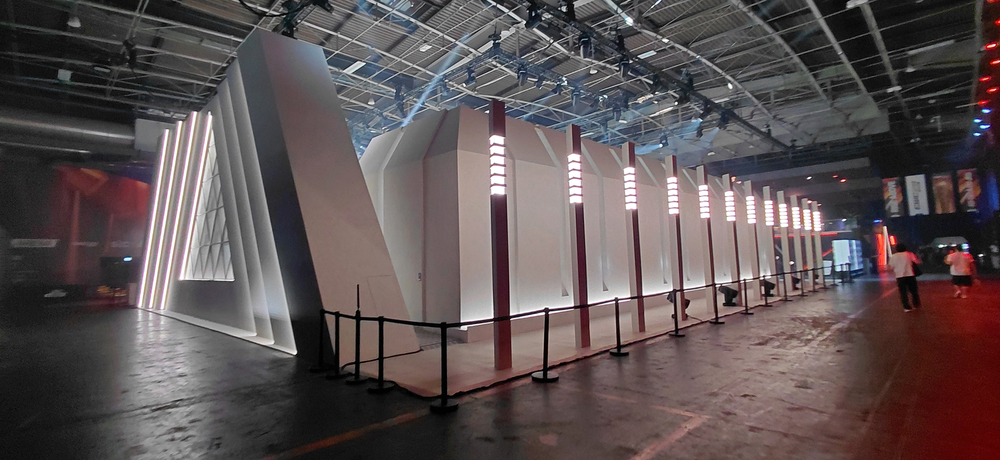
The Price of Competition: Who Is Being Left Out of the World’s Highest-Paying Esports Tournaments?Automatic translation. Printed names stay as printed. A translation can change a sentence, so the English page is the record.
Newsroom ·
Letters from Mark Ryan Wilson. The questions are his. Where a connection has not been established, he says so.

The Price of Competition: Who Is Being Left Out of the World’s Highest-Paying Esports Tournaments?Stories the publisher is pointing to. The reporting stays with the publication that wrote it.
 This Engineer’s Sunday Clean-Ups Brought 5000+ Volunteers Together to Clear 1 Lakh Kg of River Waste.
This Engineer’s Sunday Clean-Ups Brought 5000+ Volunteers Together to Clear 1 Lakh Kg of River Waste.
People of Color in Tech's weekly letter on technology, business, and the people doing the work.
 Deloitte's $21.5 million settlement.
Deloitte's $21.5 million settlement.
Stories of people and institutions in India. The site began in Bengaluru in 2008.
 A dragonfly across the Indian Ocean.
A dragonfly across the Indian Ocean.
Dr. Martha Boeckenfeld's public notes from Walchwil. She writes about the research, including times when a machine is involved and a person still has to decide.
 A seed, 32,000 years in the ice.
A seed, 32,000 years in the ice.
Sigma Xi's magazine, written by the researchers who did the work. The reader needs a membership.
 Cellular Portraits.
Cellular Portraits.

Mark Ryan Wilson
Publisher, Leaders.vote · Chicago
He publishes Leaders.vote from Chicago and is a member of Sigma Xi. The letters are his. Where a connection has not been established, he says so.

Michael Berhane
Co-founder and chief executive, People of Color in Tech
He and Ruth Mesfun started People of Color in Tech in August 2015.
michael@peopleofcolorintech.com LinkedIn @michaelberhane_ Team page

Ruth Mesfun
Co-founder, People of Color in Tech
She and Michael Berhane started People of Color in Tech in 2015. She taught programming to high school students.

Dr. Martha Boeckenfeld
Host, The Edge of Tomorrow · Walchwil
She hosts The Edge of Tomorrow. The notes here are her posts. She takes keynotes, workshops, and board work by direct message on LinkedIn.

Chip Gaines
Co-founder, Magnolia · Waco
He is co-owner and co-founder of Magnolia. He and Joanna Gaines opened the shop in Waco in 2003.

Joanna Gaines
Co-founder, Magnolia · Waco
She is co-owner and co-founder of Magnolia, editor in chief of Magnolia Journal, and a New York Times bestselling author.
/english-betterindia/media/post_attachments/our-team/Dhimant-Arun-Parekh-img.jpg)
Dhimant Parekh
Founder, The Better India · Bengaluru
He and Anuradha Parekh started The Better India in Bengaluru in 2008, as a weekend blog.
/english-betterindia/media/post_attachments/our-team/Anuradha-Dhimant-Parekh.jpg)
Anuradha Parekh
Co-founder, The Better India · Bengaluru
She and Dhimant Parekh started The Better India in Bengaluru in 2008.
Tanaya Singh
Writer, The Better India
She wrote this piece for The Better India in 2015. She later served as its chief editor for English, through May 2025. Before that, she was executive editor at Youth Ki Awaaz.

Kanessa Muluneh
Founder, Nyle
She leads Nyle's vision, investor relationships, and partnerships across Africa and the diaspora.
Leaders.vote did not write these pieces and does not endorse them.
Nothing in this publication.
Letters from Mark Ryan Wilson. The questions are his. Where a connection has not been established, he says so.
Leaders.vote · This week’s letter
From the publisher · · 9 min read
An investigation into prize money, restricted participation, geographic representation, human genetic recycling, and rhythm entrainment in competitive gaming.
Leaders.vote · November 10, 2026
Competitive gaming has developed into an international industry where professional players and organizations compete for millions of dollars in prize money.
In 2026, the Esports World Cup announced a total prize pool of $75 million. Fortnite’s Global Championship offered $400,000 to its winning duo, while the Rocket League World Championship offered $300,000 to its winning team.
$75 million Esports World Cup, 2026, the whole event
$7 million to the winning Club Championship organization
$400,000 Fortnite’s winning duo
$300,000 Rocket League’s winning team
$500,000 EVO Las Vegas, across twelve fighting games
These competitions operate through different qualification systems, regional allocations, and organizational requirements.
Some allow independent competitors to enter open qualifiers. Others require participation through designated professional leagues or established competitive organizations.
I’m examining whether the world’s highest-paying esports competitions disproportionately restrict opportunities for players from countries and populations where rhythm entrainment may contribute to competitive performance.
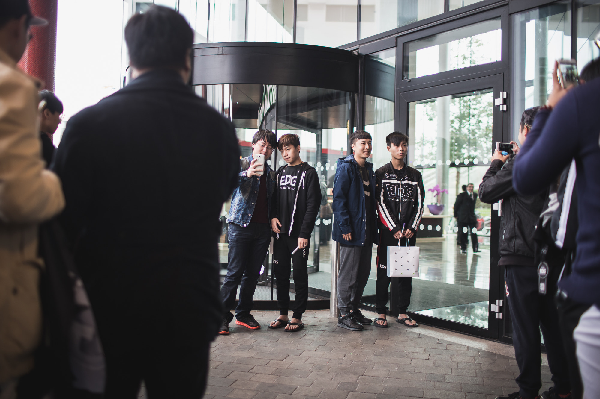
My research uses fighting games, multiplayer online battle arenas (MOBAs), first-person shooters (FPS), and MMORPG player-versus-player (PvP) combat to examine relationships between rhythmic synchronization, temporal prediction, pattern recognition, motor coordination, and player performance.
My observations have led me to investigate whether players demonstrating stronger rhythmic synchronization consistently outperform those who demonstrate less of it.
I’m comparing those observations with the geographic distribution of international esports opportunities, particularly in competitions offering substantial financial rewards.
I’m also investigating whether game publishers have identified relevant performance patterns through their behavioral data and whether those findings, if they exist, have influenced tournament structures.
The financial rewards available through esports vary considerably, as do the qualification systems governing access to them.
The 2026 Esports World Cup announced a $75 million prize pool across 25 tournaments, individual awards, and its cross-game Club Championship.
Of that amount, $30 million was allocated to the Club Championship, with $7 million designated for the winning organization. More than $39 million was allocated across individual game championships.
The Fortnite Global Championship featured a $2 million prize pool, with $400,000 designated for the winning duo, or $200,000 per player.
The Rocket League World Championship featured a $1.2 million prize pool, with $300,000 designated for the winning team.
By comparison, EVO Las Vegas 2026 distributed $500,000 across twelve fighting-game tournaments, with first-place payouts in the tens of thousands of dollars.
These amounts represent different types of financial awards. The Esports World Cup total covers an entire multi-game event, Fortnite’s and Rocket League’s figures refer to individual championships, and EVO’s total covers twelve separate tournaments.
The participation systems also differ.
EVO allows eligible players to register directly for its open-bracket competitions without professional team contracts.
Fortnite and Rocket League provide open qualification pathways, subject to eligibility and regional requirements.
League of Legends Worlds, by contrast, requires teams to advance through designated professional competitive systems.
The Esports World Cup combines multiple qualification structures across its participating games, including established professional circuits, regional qualifiers, and other publisher-approved pathways.
I’m examining whether larger financial rewards are associated with more restrictive participation systems, how those restrictions vary geographically, and which populations have access to the qualification process.
The comparison also considers how much prize money reaches individual competitors, how much is awarded to organizations, and whether independent players have opportunities to compete for those rewards.

International esports competitions do not provide identical qualification opportunities to every country.
Some regions receive more championship places, professional infrastructure, and investment than others.
The 2026 Esports Nations Cup’s Counter-Strike 2 qualification structure, for example, allocated four regional championship places each to Western and Eastern Europe, compared with one each for North Africa and Sub-Saharan Africa.
These allocations establish differences in championship representation. They do not, by themselves, establish discriminatory intent or differences in competitive ability.
I’m comparing tournament structures with the geographic distribution of players, regional qualification opportunities, competitive results, and available infrastructure.
The investigation also examines whether competitors from countries with limited representation have opportunities to demonstrate their abilities before championship allocations are determined.
A country may have an active gaming population without possessing the professional infrastructure, tournament partnerships, or regional qualification pathways required to participate in certain international competitions.
This creates a distinction between access to a video game and access to its professional competitive ecosystem.
My research uses fighting games, MOBAs, FPS, and MMORPG PvP environments to examine relationships between rhythmic synchronization, temporal prediction, motor coordination, and competitive performance.
Rhythm entrainment involves synchronizing behavior with an external rhythmic signal.
Different game genres provide opportunities to observe these functions under different conditions.
Fighting games involve responding to attack patterns, movement sequences, and narrow timing windows.
MOBAs involve coordinating abilities, movement, and team engagements around changing conditions.
FPS environments involve movement timing, strafing, coordinated attacks, and anticipation of opponents’ actions.
MMORPG PvP provides environments for examining movement synchronization, attack timing, opponent prediction, defensive responses, and adaptation to changing combat patterns. Duels, arenas, battlegrounds, and open-world PvP allow observations across different combat systems, including tab-targeting and action-oriented combat.
MMORPG PvP also offers opportunities to observe how players adapt to opponents over repeated encounters, including changes in movement patterns, ability timing, and combat decisions.
My observations suggest that players demonstrating stronger rhythmic abilities may possess competitive advantages in certain situations.
I’m investigating whether these observations can be reproduced through controlled measurements and whether the relationship remains after accounting for experience, practice, equipment, and other factors.
Precise timing, temporal prediction, and rhythm entrainment are related but distinct functions. Gameplay performance alone does not establish which function accounts for a particular result.
I’m also examining whether geographic differences in tournament participation overlap with independently measured differences in rhythm-related performance.
That comparison requires direct cognitive measurements rather than assumptions based on nationality, race, or cultural traditions.
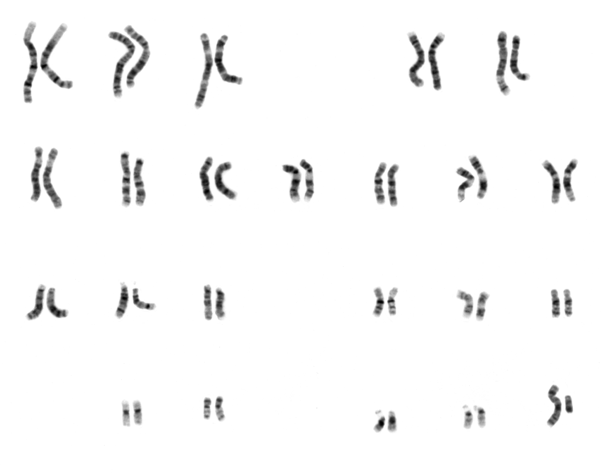
My broader research examines what I refer to as human genetic recycling: repeated reproduction within restricted ancestral networks over generations.
Population genetics distinguishes between endogamy, consanguinity, inbreeding, and genetic drift. These processes can affect genetic diversity in different ways, particularly in small or isolated populations.
I’m investigating whether measurable variation in cognitive functions, including rhythm entrainment and temporal prediction, has any relationship with reproductive patterns and genetic diversity.
There is currently no established evidence demonstrating that particular racial populations have lost rhythm entrainment through restricted reproduction or that such a process explains differences in esports performance.
Race and nationality are not reliable substitutes for genetic measurements.
The relationship between reproductive patterns and cognitive performance would require independently collected genetic data, validated cognitive assessments, and appropriate controls for environmental and developmental influences.
The investigation into tournament access can proceed independently of those questions.
Online multiplayer games, including MMORPG PvP environments, generate information about player movement, positioning, attack timing, ability usage, match outcomes, and other behavioral measurements.
Publishers may use these records for matchmaking, balancing, anti-cheat enforcement, and gameplay analysis.
Depending on the available measurements, the same data may provide opportunities to study temporal prediction, motor coordination, and other timing-related functions.
MMORPG PvP may offer additional longitudinal data through repeated duels, arena matches, battleground participation, opponent encounters, and changes in combat behavior over time.
I’m investigating whether game publishers have studied relationships between rhythmic synchronization and competitive performance.
I’m also examining whether any such findings have influenced tournament eligibility, regional investment, or professional qualification systems.
The existence of gameplay telemetry does not establish that publishers have identified population-level cognitive differences or intentionally concealed them.
Evidence of institutional knowledge would require relevant research, communications, documentation, or testimony.
Publishers, tournament organizers, professional teams, sponsors, and regional administrators influence the structure of competitive esports.
Their decisions determine which countries can enter official qualifiers, how many championship places are available, and which competitors can pursue financial rewards.
Professional systems can support broadcasting, scheduling, sponsorship agreements, competitive integrity, and financial stability.
They can also create barriers for independent competitors who lack organizational connections or access to established regional circuits.
I’m examining whether those restrictions are maintained primarily for operational and commercial reasons or whether evidence supports additional explanations.
The investigation distinguishes intentional restrictions on participation from intentional discrimination against particular populations.
Organizers deliberately establish eligibility requirements. Establishing that those requirements are intended to disadvantage a particular population would require separate evidence of motive and decision-making.
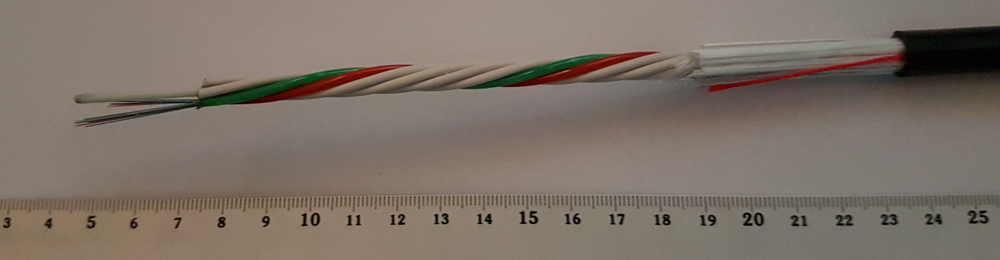
The development of competitive gaming is influenced by economic conditions and infrastructure.
Internet connectivity, access to equipment, education, international travel, employment opportunities, and investment can affect whether players are able to pursue professional esports.
Government decisions influence many of these conditions.
Broadband infrastructure can determine whether players have reliable access to online competition. Visa policies can affect international tournament attendance. Economic conditions can influence whether competitors can afford equipment, training, and travel.
These factors may contribute to geographic differences in professional esports participation independently of competitive ability.
I’m examining how public infrastructure and private tournament policies interact to shape international competitive opportunities.
The world’s highest-paying esports competitions operate through different qualification systems.
Some allow eligible competitors to enter open brackets. Others require advancement through designated professional leagues, regional systems, or established organizations.
The financial differences are substantial. In 2026, the Esports World Cup allocated $7 million to its winning Club Championship organization, while individual champions at EVO received tens of thousands of dollars through open-entry fighting-game tournaments.
Those figures are not directly equivalent, but they demonstrate how financial rewards are distributed across different competitive structures.
I’m investigating whether the geographic distribution of those opportunities overlaps with measurable differences in rhythmic synchronization and competitive performance.
My research across fighting games, MOBAs, FPS, and MMORPG PvP provides environments for examining those functions through different combat systems and patterns of player interaction.
I’m also examining what information publishers possess about player behavior and whether their competitive structures reflect that information.
The investigation concerns who has access to the world’s highest-paying esports competitions, how those decisions are made, and whether the systems allow the strongest available competitors to demonstrate their abilities.
Sources and verification
Research note: The tournament structures and announced financial awards are documented. The proposed relationships between rhythm entrainment, geographic representation, reproductive patterns, and intentional exclusion remain hypotheses requiring independent investigation.
Mark Ryan Wilson
Publisher, Leaders.vote · Chicago
He publishes Leaders.vote from Chicago and is a member of Sigma Xi. This letter is part of his research on rhythm entrainment, color conceptualization, and pattern recognition, measured through video games and esports. He also releases music as Maginary. His books are The Grind Was Never the Game and The Pattern Tribe.
markup.ux@gmail.com leaders.vote github.com/markup-ux Spotify Apple Music Amazon Music Deezer YouTube
Leaders.vote · Research note
From the publisher · · 7 min read
The Rainbow Flag, Color Conceptualization, Rhythm Entrainment, and the Possibility of Learned Visual Aversion
Publisher, Chicago
Could some of the things people are taught to hate also be things their brains process differently?
Consider the rainbow flag.
A collection of colors arranged in a recognizable pattern has become a politically and culturally contested symbol. For some, it represents diversity, acceptance, and freedom. For others, it inspires hostility, discomfort, or rejection.
Common explanations involve religion, politics, cultural conditioning, and attitudes toward LGBTQ+ people.
This raises another question:
Could differences in color conceptualization influence how people respond to complex multicolored patterns, and could social conditioning turn those differences into learned aversion?
More specifically, could individuals experience measurable differences in visual processing associated with genetic or developmental factors, including those influenced by reproductive isolation?
This question is part of my broader research into human cognitive functions, including rhythm entrainment, pattern recognition, and color conceptualization.
In this note. Rhythm entrainment. Color conceptualization. The rainbow flag. Closed, self-reinforced reproduction. Video games. Social conditioning. What would count as evidence. What we are responding to.
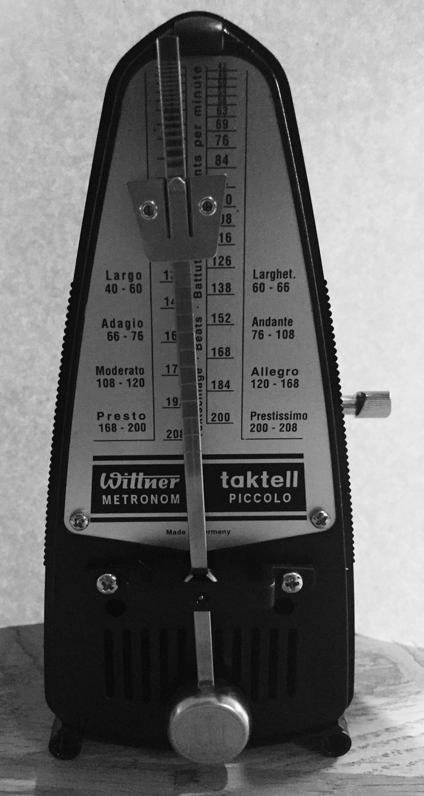
Rhythm entrainment is the ability to synchronize movement or neural activity with an external rhythm, such as music.
It is a measurable function of the human nervous system. Researchers have investigated its relationship to auditory processing, motor coordination, prediction, and timing.
Rhythm is also frequently discussed as a cultural characteristic, an artistic gift, or something certain people naturally possess.
My research focuses on measuring cognitive functions and examining differences in performance rather than relying on cultural explanations alone.
Using video games and esports environments, I have been exploring ways to examine rhythm entrainment and other forms of pattern recognition through observable behavior.
Could individuals who differ in their ability to process temporal patterns also differ in their ability to process complex visual patterns?
Could those differences influence how they respond to patterns that have been assigned negative cultural meanings?
Color conceptualization involves how the brain categorizes, distinguishes, remembers, and assigns meaning to colors.
It is not identical to color vision.
Someone might have normal color vision while performing differently on tasks involving color categorization, visual memory, attention, or complex pattern recognition.
Consider an object containing two base colors compared with an object containing six.
The presence of additional colors does not automatically make the object neurologically difficult to process. Contrast, spatial arrangement, brightness, movement, and task demands all influence perception.
Increasing visual complexity can, however, change the demands placed on attention and perception.
In video games, characters, environments, and visual effects can contain numerous independently colored elements moving simultaneously.
My proposed research examines whether objects containing four or more base colors produce measurable differences in visual recognition, tracking, or response times, particularly when those objects are moving.
Four colors is a proposed experimental threshold, not an established neurological boundary.
The objective is to determine whether a measurable threshold exists.
The familiar six-stripe rainbow Pride flag provides an example of a multicolored visual symbol.
It contains red, orange, yellow, green, blue, and violet.
The flag also carries social and political meaning.
People encounter messages about what it represents through families, religious institutions, political movements, schools, and media.
Those messages can produce positive or negative emotional associations.
Could negative cultural conditioning amplify an underlying difficulty with certain visual patterns, if such a difficulty exists?
Suppose researchers identified individuals who consistently experienced greater cognitive load when tracking or categorizing complex multicolored objects.
Would those individuals be more susceptible to developing negative associations with such patterns?
Would repeated social messaging strengthen those associations?
Could social conditioning instead produce negative emotional reactions that interfere with otherwise normal visual performance?
Or are attitudes toward the rainbow flag entirely unrelated to visual processing ability?
These possibilities would require controlled experiments to distinguish.
Another component of my research concerns what I describe as closed, self-reinforced reproduction.
This refers to reproductive patterns that maintain a relatively restricted pool of genetic ancestry across generations.
In population genetics, related concepts include endogamy, consanguinity, inbreeding, and reproductive isolation. These terms describe different circumstances and should not be treated as interchangeable.
Close-relative reproduction can increase homozygosity and the likelihood of certain recessive genetic conditions. Some inherited conditions can affect neurological development or sensory function.
However, existing evidence does not establish that endogamous populations generally lose color conceptualization, rhythm entrainment, or other cognitive abilities.
It also does not establish that racial prejudice is a symptom of genetic decline.
My research question is:
Could specific genetic or developmental factors associated with reduced genetic diversity influence performance on particular visual or temporal processing tasks?
If differences are observed, researchers would need to examine possible causes, including education, environment, experience, sensory health, socioeconomic conditions, and individual genetic variation.
Racial identity alone would not be an adequate measure of reproductive history or neurological function.
Video games provide an environment where visual complexity, motion, timing, and player responses can be systematically manipulated.
A controlled experiment could present participants with objects containing progressively more independently colored regions.
Some objects would remain stationary. Others would move across the screen at different speeds.
Participants would complete identification, tracking, memory, and reaction-time tasks.
Potential measurements include:
The experiment could use abstract patterns alongside culturally recognizable symbols.
This would help distinguish responses to color complexity from responses to a symbol’s social meaning.
For example, a participant might react negatively to a Pride flag but show no difficulty identifying an unrelated six-color geometric pattern.
That result would support a social or symbolic explanation rather than a general visual-processing limitation.
Consistent difficulty across multiple unrelated patterns could warrant further investigation of perceptual mechanisms.
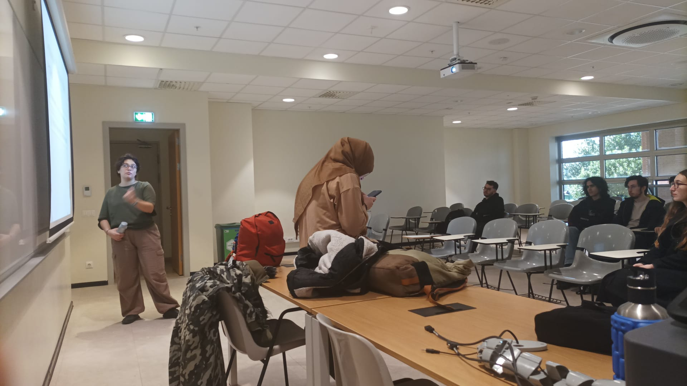
Cultural conditioning and cognitive processing can both influence human responses to visual information.
People learn what to value, avoid, admire, and fear.
If someone repeatedly hears that a particular symbol is dangerous, immoral, or undesirable, the symbol can acquire a negative emotional association.
This is consistent with established principles of associative learning.
But could preexisting perceptual difficulty make certain associations easier to acquire?
Could learned hostility interfere with attention, perception, or task performance?
Could these effects be mistaken for one another?
Could individuals learn to reject certain visual patterns without recognizing that they experience those patterns differently?
These questions can be examined without assuming that hostility toward a social group indicates neurological impairment.
The same distinction applies to rhythm entrainment.
Differences in musical synchronization do not, by themselves, establish differences in intelligence, morality, genetic fitness, or racial ancestry.
Research could examine whether particular perceptual abilities correlate with one another and which mechanisms explain any observed relationships.
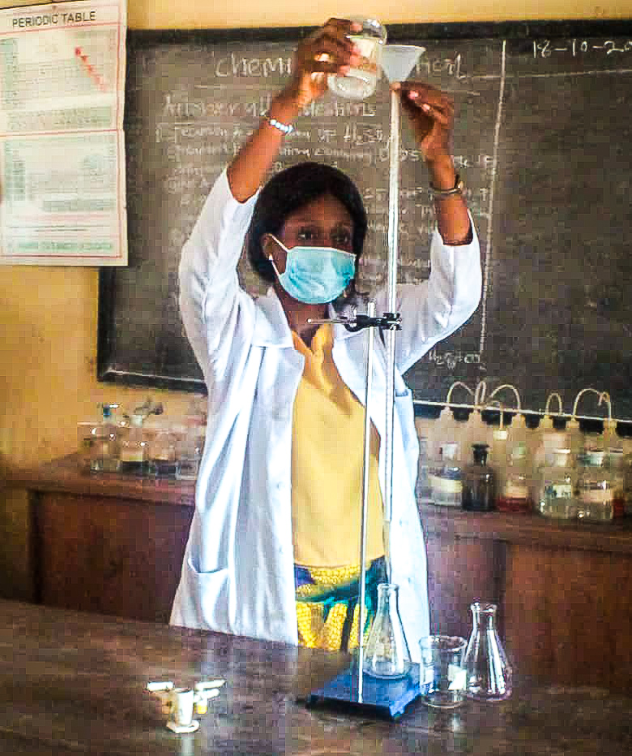
The proposed relationships need to be tested in ways that allow the hypotheses to be rejected.
A study would first need to establish whether color-processing differences exist independently of social attitudes.
It would then need to determine whether those differences predict responses to multicolored symbols after accounting for cultural background, political beliefs, religious upbringing, familiarity, and other influences.
If participants with strong negative attitudes toward the rainbow flag perform normally on abstract multicolored pattern tasks, that would weaken the proposed perceptual explanation.
If participants with visual-processing difficulties show no greater tendency toward negative symbolic associations, that would also weaken it.
If a relationship emerged, it would not automatically establish a genetic cause.
Further studies would be necessary to distinguish inherited factors from learning, development, and environmental influences.
The rainbow flag provides a recognizable example for examining possible relationships between visual perception, social conditioning, and pattern recognition.
Why do certain patterns become objects of admiration while others become targets of hostility?
How much of our response to visual information is learned?
How much depends on individual differences in perception?
Could reproductive isolation contribute to measurable differences in specific cognitive functions?
Could those differences, if established, interact with cultural conditioning?
And could video games provide environments for collecting the behavioral data needed to investigate these questions?
My research into rhythm entrainment, color conceptualization, and pattern recognition focuses on examining cognitive functions through observable evidence.
The proposed connection between reproductive isolation, color-processing differences, and learned aversion to multicolored symbols has not been established.
The next step is to develop controlled methods for measuring the relevant functions, identifying potential correlations, and testing alternative explanations.
Are people responding to the meaning assigned to a pattern, the way their brains process that pattern, or some combination of the two?
Leaders.vote · Letter
From the publisher · · 4 min read
What if an advantage in multiplayer combat begins with something we usually associate with a dance floor?
Publisher, Chicago · Sigma Xi
My research asks whether differences in detecting and responding to rhythm also appear in how people follow movement in games. I am interested in the relationship between sound, synchronization, visual tracking, and competitive performance.
The question is straightforward. If a player moves according to a rhythmic pattern, does an opponent’s ability to detect rhythm help determine whether they can follow that movement?
If the answer is yes, developers building action combat systems could be creating an advantage they have not adequately considered when they define a target audience.
In this note. The dance floor. Combat systems. Color on a moving character. Open brackets.
People differ in how they move in relation to music. I notice some people keeping a relationship with a track as its patterns change, while others appear to struggle to synchronize. I want to know whether those differences predict anything beyond the dance floor.
A person’s visible movement does not necessarily tell us what they hear. Detecting a beat, moving in time, and following a moving target would each need to be measured. My hypothesis is that these abilities may overlap in ways that become competitively significant.
Imagine a player changing direction in time with a musical pattern. The opponent sees the same character throughout the encounter, but struggles to anticipate where it will move next. Does the opponent lose track because of the timing? Would irregular movement produce the same result? Would hearing the music help, or interfere? Those are the questions I want the movement data to address.
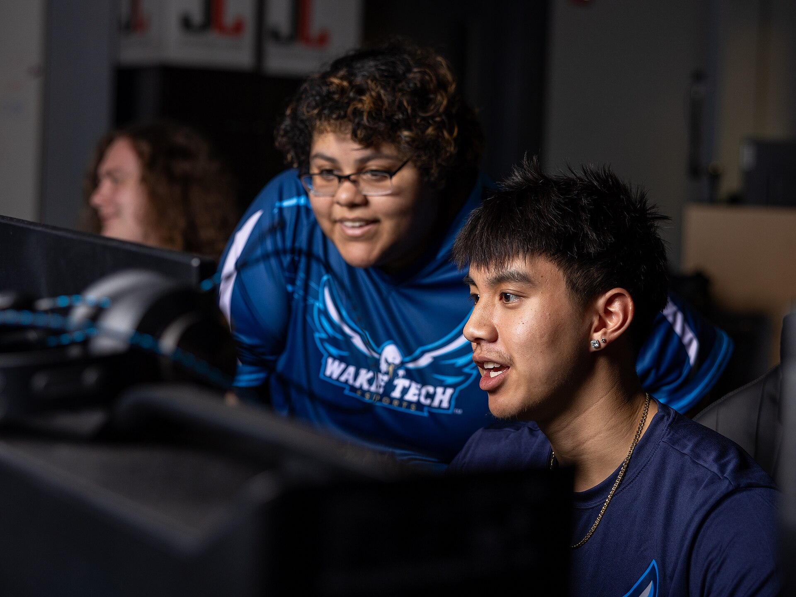
Developers choose which abilities a game rewards. My concern is that a game could emphasize continuous movement and rapid visual tracking without examining how those demands affect the players it hopes to reach.
If some players recognize and adapt to rhythmic movement more readily than others, that difference could become an advantage in combat. Better equipment, or knowledge of a character’s abilities, might not fully compensate for it. A system can look appealing to its intended audience while rewarding an ability the designers overlooked.
Would a tracking difference grow when characters move through detailed scenes, with overlapping animations and effects? Would it remain against a plain background? “Advanced graphics” is too broad a label to explain a result by itself. The useful question is which visual conditions change performance.
A comparison could change background detail, effects, camera movement, and target contrast separately. That would separate a difficulty following rhythmic movement from a difficulty finding a character in a crowded scene.
Games that let players recolor parts of an outfit offer another test. Black Desert Online’s customization is one example. I am researching whether a character showing four or more base colors becomes harder to track while moving, particularly for players who adapt less to a changing rhythm. Could some arrangements look blurred or blended to those observers? Could moving in time with sound change that effect?
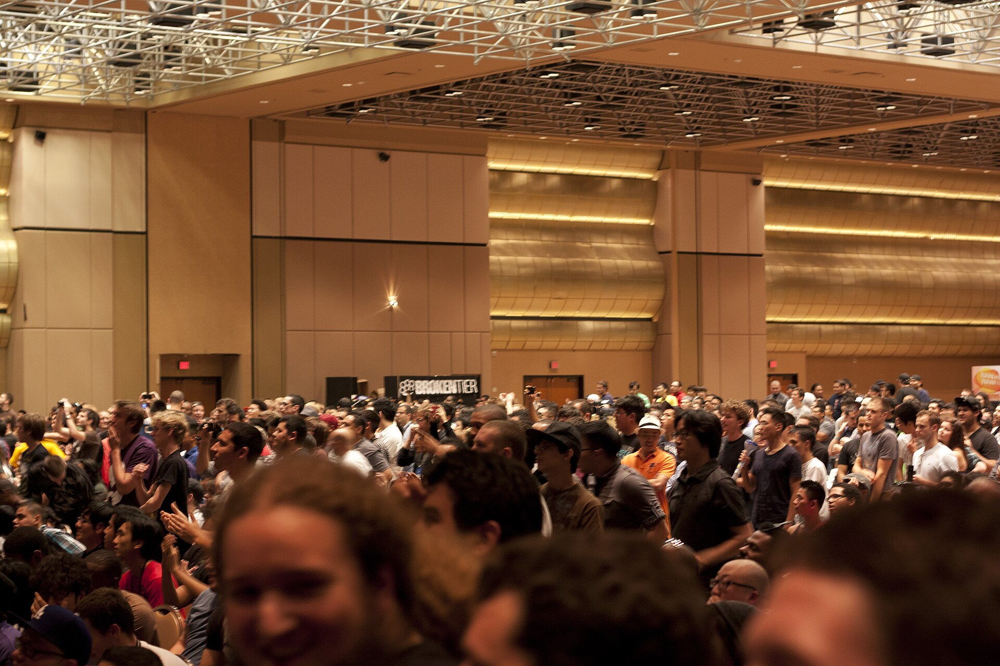
I like EVO because an open bracket lets a competitor advance by match results, rather than by invitation. Its documented champions include MenaRD in Street Fighter 6 and Arslan Ash in Tekken 8 in 2026, and SonicFox in Mortal Kombat 1 in 2025.
Those results are concrete. They do not say which perceptual abilities explain them. I want to test whether rhythm perception contributes to success when movement timing changes. That means measuring competitors directly and comparing those measurements with play.
Other research has reported differences between expert and amateur esports players in attention and spatial cognition. That supports studying perception as part of performance. It does not establish rhythm as the cause of success, and it does not establish skin pigmentation as the explanation.
A claim that a demographic group is increasingly represented in top brackets would also need a defined set of games, years, placements, and participation figures. A few champions cannot establish that trend.
Not established. This letter states questions. It does not report a completed experiment, and it does not treat rhythm or pigmentation as the explanation of who wins.
Leaders.vote · Letter
From the publisher · · 4 min read
The pigmentation people ridicule is part of a family of materials researchers are testing as shielding.
Publisher, Chicago · Sigma Xi
“With yo black ass.” “You so black…” Sometimes those words come wrapped in laughter. Sometimes they are meant to wound. Either way, the message can be the same: the darker you are, the more your appearance becomes something to ridicule.
Many of us hear that long before we learn anything meaningful about melanin. We learn the insult before we learn the biology. Through repetition, colorism can teach darker-skinned people to judge themselves, and one another, through the same prejudice.
What are we taught about our bodies, and what is left out?
Meanwhile, researchers are investigating melanin-containing materials for radiation protection, including experimental coatings and composites with possible uses in space. That contrast is the question of this letter.
In this note. What the studies did. Variation. The connection to the game research.
NASA’s technology database includes a project titled “Melanin Coated Aerogels for Radiation Mitigation.” Its stated goal was to investigate a lightweight, melanin-saturated material as a shield against ultraviolet radiation. The project explored coatings and composites with possible relevance to equipment, space facilities, and systems used outside a spacecraft. That is experimental research. It does not establish that melanin is painted onto operational spacecraft.
A 2025 study examined melanin-containing materials left outside the International Space Station for about six months. Researchers tested polylactic acid, or PLA, combined with biological and synthetic materials. The fungal melanin composite showed improved structural stability, and it protected an underlying material against ultraviolet and space radiation. These were experimental samples. The findings matter for materials that might be developed later.
At Northwestern University, researchers developed a selenium-enriched “selenomelanin,” which showed promise in laboratory experiments protecting human cells from X-ray damage. One experiment does not establish protection against every part of space radiation. It does help explain the scientific interest.
Melanin is a family of materials, with different structures. Fungal melanin, the pigments in human skin, and engineered versions should not be treated as the same thing. The work described here uses fungal, other animal-derived, or synthetic materials. It does not require extracting melanin from darker-skinned people.
The social contradiction remains. A society can attach prejudice to pigmentation in a person while studying related pigments in a laboratory.
Humans are part of the natural world. As in other species, heritable variation is material on which selection can act. Mutation, gene flow, genetic drift, and natural selection shape evolution. Genetic diversity helps a population keep different possibilities when conditions change. Skin color alone cannot tell us how genetically diverse a person or a population is.
I describe colonization as invasion followed by genetic recycling into extinction, to maintain what was pillaged. That description is mine. It is not a finding of the melanin studies.
When differences are taught mainly as reasons for hierarchy, exclusion, or shame, we inherit judgments where we should have received an explanation.
I am an independent researcher and a member of Sigma Xi. A question runs through the work: how do social assumptions influence which biological traits and human abilities we investigate, and which we dismiss?
I study rhythm entrainment and pattern recognition in video games, including esports and massively multiplayer games. ImagineXI, built on a modified Final Fantasy XI server, looks at party formation, job selection, cooperation, and whether players stay. Those settings can produce questions. They do not, by themselves, show what a gameplay measure reveals about rhythm. A fair test has to account for experience, equipment, latency, and the rest of what affects performance.
The melanin studies and my game research ask different questions. What connects them, for me, is the need to investigate biology carefully and to question the assumptions people bring to it.
Timing deserves investigation. It should not be reduced to a stereotype about who “has rhythm.” Observations in games can suggest a test. They cannot establish a racial or genetic explanation.
Learning what melanin might do should improve education about pigmentation. It should not become a claim about a person’s intelligence, character, or worth. Darker-skinned people do not need a link to space technology to justify their dignity.
If melanin is worth studying for what it might protect beyond Earth, the prejudice attached to it here deserves the same seriousness. We should recognize the harm in an insult even when it arrives as a joke, and ask why so many people meet ridicule about their color before they meet an explanation of it.
The affiliation. Sigma Xi membership is my connection to the research community. The interpretations in this letter are my own. The affiliation is not an institutional endorsement.
Sources named in the letter
Leaders.vote · Letter
From the publisher · · 2 min read
The Grind Was Never the Game, and The Pattern Tribe. Both are his, and both are independently published.
Publisher, Chicago · Sigma Xi
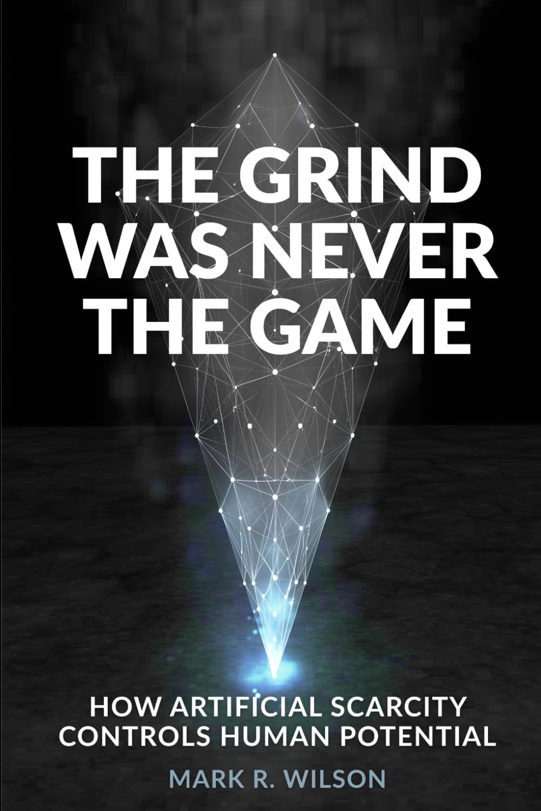
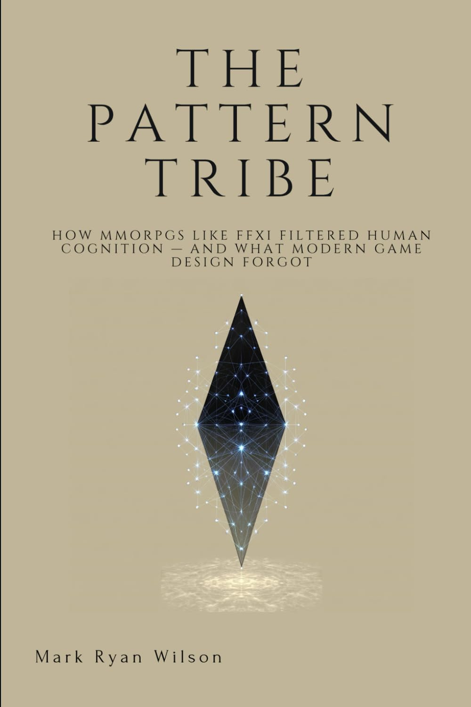
Two books carry the same questions as these letters: what a game asks a player to notice, and what a group keeps in place.
The Grind Was Never the Game came out in February 2026. The Pattern Tribe came out on June 24, 2025. The pages themselves stay with the seller. This note only says what each book is for.
In this note. A loop on a private server. A claim about cognition that the book does not prove here.
The full title is The Grind Was Never the Game: How Artificial Scarcity Controls Human Potential. The paperback is 97 pages, independently published on February 27, 2026. ISBN-13 979-8250106375. A Kindle edition is dated February 24, 2026.
It began with a pattern he saw on Final Fantasy XI private servers. A server launches and spikes, contracts in the middle, splits at the endgame, and then resets. He asks why players who have already watched that loop enter it again, and how artificial scarcity holds the group there. The book then takes those questions into behavioral economics, sociology, and systems.
Paperback Kindle Barnes & Noble
The full title is The Pattern Tribe: How MMORPGs Like FFXI Filtered Human Cognition — And What Modern Game Design Forgot. The paperback is 29 pages, independently published on June 24, 2025. ISBN-13 979-8289371607.
His description says the book explores racism as a form of genetic recycling driven by greed, and asks whether the cognitive side of that can be watched in how people play. That is the book’s premise. It is not a finding reported on this page. Final Fantasy XI is the game he uses as the example.
Leaders.vote · Letter
From the publisher · · 2 min read
Advanced graphics may be asking some players to keep a rhythm their vision cannot hold.
Publisher, Chicago · Sigma Xi

Video games with advanced graphics may be inducing a visual version of the offbeat phenomenon, a kind of flicker vertigo, in players who struggle to process rhythmic patterns on screen.
Flicker vertigo is the name used for disorientation from a strobing light. I am asking whether a crowded game picture can produce a visual form of it.
I believe this is tied to generations of genetic recycling used to maintain access to what was pillaged.
Artistic creativity, as I understand it, relies on the same brain functions that allow a person to move alongside external sound and to conceptualize with more than three base colors.
In this note. The offbeat on a screen. More than three colors. What advancing graphics do not yet show.
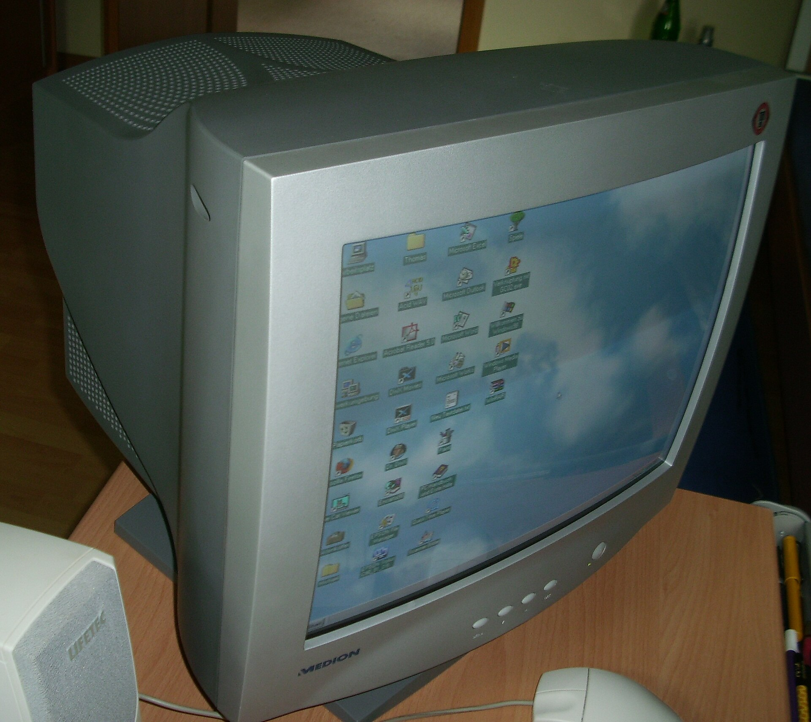
A picture tube redraws its image many times a second. I am asking whether that refresh, once a game fills the glass with a moving pattern, becomes a visual offbeat for a player who already struggles to process rhythm.
The question is about the pattern on the screen. It is not a measurement of who those players are.
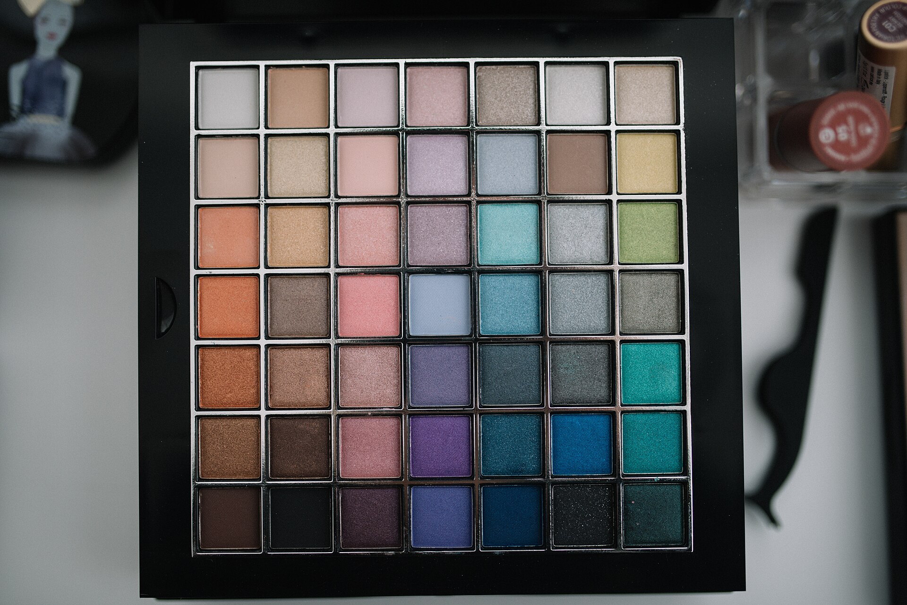
I think the same functions are at work in artistic creativity, in moving with sound, and in holding more than three base colors in mind.
Cosmetics and items with four or more base colors can also create blurry vision in motion for players who are unable to detect and process rhythm from sound and other stimuli. That is the effect I want to test. Four colors is my proposed threshold, not an established boundary.
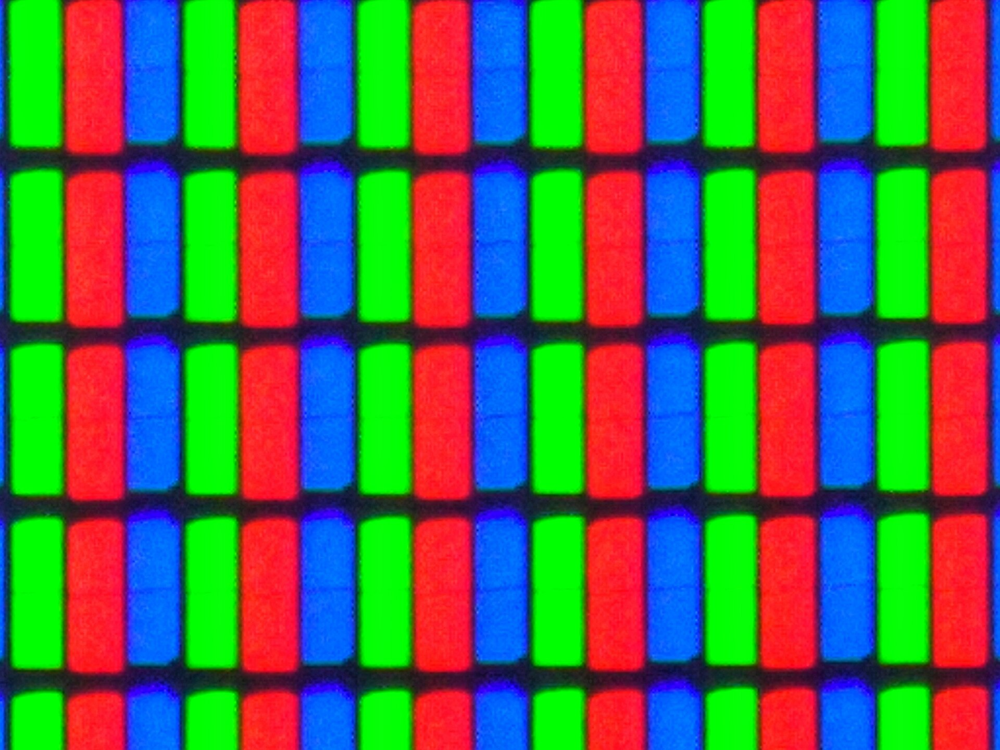
As video technology advances, games may have a greater chance of triggering seizure-like responses in groups that practice what I call closed, self-reinforced reproduction.
Closed, self-reinforced reproduction is my name for a restricted pool of genetic ancestry kept across generations. Endogamy, consanguinity, inbreeding, and reproductive isolation describe different circumstances. I am not using those words as synonyms, and I am not naming a population.
I have not measured seizure-like responses. A busier picture is not, by itself, evidence that any group is at greater risk.
Not established. This letter states a belief from October 23, 2024. It does not report an experiment. Sigma Xi membership is my connection to the research community. The interpretations are my own. The affiliation is not an institutional endorsement.
Stories the publisher is pointing to. The reporting stays with the publication that wrote it.
The Better India
· 1 min read · Raajwrita Dutta
Engineer Kapil Kumar’s weekly Clean Up Ram Ganga drives have drawn 5,000+ volunteers and removed over 1.2 lakh kg of waste from Moradabad’s river. Here’s his story.
The Better India

· 1 min read ·
The Better India reports that Lalita Prasida Sripada Srisai, then 13 and in Class 9 at Delhi Public School in Damanjodi, Koraput, Odisha, used dried waste corn cobs to take contaminants out of wastewater. The layers were long pieces, small pieces, powdered cobs, charcoal made from the cobs, and fine sand. The piece quotes the Google Science Fair account: that stack separated more than 70–80% of contaminants, including suspended particles. She won the Community Impact Award at the 2015 fair, in the 13–15 age group, and $10,000.
People of Color in Tech's weekly letter on technology, business, and the people doing the work. Newer pieces are open, with the date and the writer. Get the weekly letter. Read the site.

Habiba Katsha
Tech reporter, People of Color in Tech
She is a tech reporter at People of Color in Tech, writing about race, gender, and the internet.

Samara Linton
Head of community and content, People of Color in Tech
She is head of community and content at People of Color in Tech. She co-edited The Colour of Madness (2022) and co-wrote Diane Abbott: The Authorised Biography (2020).
POCIT Weekly

· 1 min read · Habiba Katsha
POCIT reports on a founder who designed an edge brush for Black women.
POCIT Weekly

· 1 min read · Habiba Katsha
POCIT reports that South Africa tops a ranking of Africa's most future-ready economies.
POCIT Weekly

· 1 min read · Habiba Katsha
POCIT reports that Black unemployment rates dropped and remain higher than the rates for other racial groups.
POCIT Weekly

· 1 min read · Habiba Katsha
POCIT reports that a DEI crackdown is threatening Alzheimer's research.
POCIT Weekly

· 1 min read · Habiba Katsha
POCIT covers a study that found companies which kept DEI programs performed as well as companies that dropped them.
POCIT Weekly

· 1 min read · Habiba Katsha
POCIT reports that ICE is set to spend as much as $20 million on electric-shock gloves.
POCIT Weekly

· 1 min read · Habiba Katsha
POCIT reports that Serena Ventures is becoming Starfire Ventures after losing a trademark dispute.
POCIT Weekly

· 1 min read · Habiba Katsha
POCIT reports that an autonomous-mobility startup raised $250 million at a $2.1 billion valuation.
POCIT Weekly

· 1 min read · Habiba Katsha
POCIT reports that the EEOC is suing a school over the firing of a Black employee after DEI training.
POCIT Weekly

· 1 min read · Habiba Katsha
POCIT reports that America's biggest companies are rolling back board diversity rules.
POCIT Weekly

· 1 min read · Habiba Katsha
POCIT reports that a Black woman will lead an NCI-designated cancer center for the first time.
POCIT Weekly

· 1 min read · Habiba Katsha
POCIT reports that Serena Williams is looking for the next trillion-dollar startup.
POCIT Weekly

· 1 min read · Habiba Katsha
POCIT reports that a $2 million book deal for a Black author fell apart over allegations of AI use.
POCIT Weekly

· 1 min read · Habiba Katsha
POCIT reports that the president appointed the first Black woman to lead the CDC.
POCIT Weekly

· 1 min read · Habiba Katsha
POCIT reports on a new book by AI researchers about how more people can benefit from AI.
POCIT Weekly
· 1 min read · Habiba Katsha
POCIT reports that Deloitte agreed to pay $21.5 million to settle Justice Department claims that its diversity goals broke federal antidiscrimination rules for government contractors. The piece quotes Attorney General Todd Blanche via HR Dive and notes a companion claim from Edward Blum's group.
POCIT Weekly

· 1 min read · Habiba Katsha
Jamie Dimon and Judith K. Dimon, with UNCF, are giving $12 million to twelve historically Black colleges, POCIT reports. Each school receives $1 million in endowment capital aimed at programs that train educators and nurses. The list runs from Benedict and Dillard to Tuskegee and Voorhees.
POCIT Weekly

· 1 min read · Samara Linton
After Hurricane Melissa hit Jamaica on October 28, POCIT reports that a solar atmospheric water generator in Accompong kept making nearly 400 gallons a day. Moses West of AWG Contracting built it. The machine was flipped by the wind and brought back within 48 hours.
POCIT Weekly

· 1 min read · Habiba Katsha
Elly Savatia won the Royal Academy of Engineering's Africa prize for Terp 360, an app that turns speech into sign with 3D avatars. POCIT says his company, Signvrse, recorded more than 2,300 signs with deaf and hard-of-hearing Kenyans so the avatar would move less like a machine. The grant is £50,000.
POCIT Weekly

· 1 min read · Samara Linton
Kande Sill won an Arkwright Engineering Scholarship for a drone container meant to carry vaccines and blood without being easily stolen. POCIT notes that she also writes novels as Kande S. Summers and has represented Jamaica at Expo 2020 Dubai.
POCIT Weekly

· 1 min read · Habiba Katsha
POCIT reports that Airtel Africa and Starlink switched on a satellite-to-phone service in the Democratic Republic of the Congo on August 14. At launch it covers light use, such as WhatsApp and SMS, not streaming. Airtel says it wants the same reach in the other African markets where it operates.
POCIT Weekly

· 1 min read · Habiba Katsha
Beyoncé took full ownership of SirDavis American Whisky after launching it with Moët Hennessy, POCIT reports. The brand is named for her paternal great-grandfather, a farmer and moonshiner in the South during Prohibition.
The Better India publishes stories of people and institutions in India. Newer pieces are here, with the date and the writer. Read the site.
The Better India

· 1 min read · Sriroopa Dutta
A spoon-billed sandpiper tagged in Russia has been spotted at Bakkhali, Bengal. Discover its 8,000-km migration, threats, research and conservation efforts.
The Better India

· 1 min read · Shweta Dravid
From a Rs 6,900 model to a device used in 20,000 villages, discover how Dehradun startup Sunfox Technologies is making portable ECG testing more accessible.
The Better India

· 1 min read · Anuja Vartak
Meet Edmund Thomas Clint through his experiments with crayons and watercolours, the art contest he entered at five and the children’s competition held in his memory.
The Better India

· 1 min read · Avantika Krishna
Navi Mumbai is a planned city with its own municipal corporation, not a Mumbai suburb. Its cleanliness win offers lessons for the BMC on waste management and urban governance.
The Better India

· 1 min read · Raajwrita Dutta
Sustainable lifestyle creator Sonika Bhasin explains her choice of reusable cloth diapers and how they fit into everyday parenting.
The Better India

· 1 min read · Sriroopa Dutta
Assam has restricted unauthorised drone flights near Amur falcon roosts at Umrangso and Dharamtul. Here's why protecting these migratory bird habitats matters.
The Better India

· 1 min read · Avantika Krishna
India’s Constitution had to serve former British provinces and princely states with different political arrangements. The Constituent Assembly’s debates and drafting process created a shared framework for the new republic.
The Better India

· 1 min read · Raajwrita Dutta
Want to grow pineapples at home? Uttarakhand gardener Shalini Kapruwan shares how she grew one from a pineapple crown on her terrace, along with easy tips for beginners.
The Better India

· 1 min read · Nishtha Kawrani
Baby tracheostomy care changed life for Bengaluru parents Gouthami and Sharan. After months of home care, their daughter Chikoo's tube was removed.
The Better India

· 1 min read · Vaishali Gautam
Bharat1.ai wants to build a computer model of how people move through Bengaluru. By bringing road, bus and Metro data together, it hopes to show where journeys repeatedly slow down and give planners a way to compare possible fixes.
The Better India

· 1 min read · Sriroopa Dutta
Why does Delhi experience frequent winter fog while Bengaluru sees far fewer fog events? Explore the science behind India's regional fog patterns, from the Indo-Gangetic Plains to the Deccan Plateau.
The Better India

· 1 min read · Nishtha Kawrani
See how kitchen waste composting works in Bicholim, Goa, from sorting and shredding food scraps to the role that microbes and added air play as the scraps break down.
The Better India

· 1 min read · Raajwrita Dutta
Can balcony plants withstand Delhi’s polluted air? Understand how particulate matter affects plant health and what gardeners should consider during winter.
The Better India

· 1 min read · Avantika Krishna
Rajasthan’s Tonk recorded a 96.4% mathematics pass rate in 2025. An AI-powered initiative by IAS officer Saumya Jha is helping government school students tackle maths anxiety.
The Better India

· 1 min read · Sriroopa Dutta
Pushkar Fair 2026 runs from 17 to 24 November. Find out which cultural contests, village games and local crafts make this Rajasthan celebration memorable for visitors.
The Better India

· 1 min read · Avantika Krishna
Jaipur predates Google Maps by 278 years, yet its nine sectors and right-angled streets still define the walled city. Water shortages and a scholar king drove the plan.
The Better India

· 1 min read · Nishtha Kawrani
Discover how Assam's Mahesh Bora and his daughter turn elephant and rhino dung into handmade paper, creating rural jobs and reducing reliance on wood pulp.
The Better India

· 1 min read · Raajwrita Dutta
What makes India’s sal tree so valuable? Look beyond its timber to understand the many ways this forest species influences everyday life.
The Better India

· 1 min read · Sriroopa Dutta
Primary Response Teams in the Sundarbans train local residents to respond to tiger sightings, share safety advice and support forest officials during emergencies.
The Better India

· 1 min read · Nishtha Kawrani
Kiara Powar was diagnosed with Type 1 diabetes at two. Discover how her parents helped her pursue badminton and become a sports presenter.
The Better India

· 1 min read · Nishtha Kawrani
Buying an air purifier this winter? Learn what HEPA filters mean, how they work and 5 things to check before choosing one for your home.
The Better India

· 1 min read · Sriroopa Dutta
India's new Red List assessment examines 1,211 bird species. Explore what the proposed conservation status of the Marbled Duck, Grey Plover and Sarus Crane reveals about wetland conservation.
The Better India

· 1 min read · Nishtha Kawrani
Chennai startup EarthFokus has helped over 130 commercial buildings save more than five billion litres of water, by spotting hidden leaks and cutting everyday waste.
The Better India
· 1 min read · Sriroopa Dutta
The Better India reports that the globe skimmer, weighing less than a gram, may travel up to 1,000 km across open sea from India to the Maldives. It says scientists are studying how monsoon winds carry the insect, and that the journey may extend to Africa.
The Better India

· 1 min read · Sriroopa Dutta
The Better India reports a 2026 study that says neighbourhood parks of about six acres could cool crowded streets in Bengaluru, beyond the large grounds at Cubbon Park and Lalbagh.
The Better India

· 1 min read · Sriroopa Dutta
The Better India reports on the red carrots that fill North Indian winter markets, and on research into how rising temperatures could affect the crop.
The Better India

· 1 min read · Nishtha Kawrani
The Better India reports that Arpit Paliwal and Shweta Paliwal founded HRS Navigation so Indian hospitals could use surgical navigation. It says the easyNav system lets a surgeon track instruments against a patient's anatomy, and that it has aided more than 20,000 surgeries in India.
The Better India

· 1 min read · Avantika Krishna
The Better India reports on Bargad, which offers free theatre training and a monthly stipend. It tells of Lalit, whose family asked whether theatre could pay the bills, and who now has a play of his own.
The Better India

· 1 min read · Sriroopa Dutta
The Better India reports that in parts of western Rajasthan, atta-satta ties two marriages so that one woman's decision to leave can affect another. It says Sambhali Trust has, over 19 years, sheltered 14 women and taken up 188 such cases.
The Better India

· 1 min read · Nishtha Kawrani
The Better India reports that Bhopal's Kachra Café lets residents trade household waste for a digital currency they can redeem for food. It says the café sent more than 45 tonnes for recycling in eight months.
The Better India

· 1 min read · Sriroopa Dutta
The Better India reports that mountaineer Yogeshwari Bohare used tissue paper and medical tape to improvise a pad at 16,000 feet. It says the episode raises questions about menstrual hygiene on expeditions.
The Better India

· 1 min read · Sriroopa Dutta
The Better India reports that schoolgirl Suhani Gupta built SkyQi, a free tool that uses smartphone photos to estimate night-sky quality. It says her analysis covers 50 Indian cities.
The Better India

· 1 min read · Nishtha Kawrani
The Better India reports that IIT Bombay's drought portal uses satellite data to forecast agricultural droughts up to four weeks ahead.
The Better India

· 1 min read · Raajwrita Dutta
The Better India reports an experiment on 4,000 square metres of restored land in Ladakh. It says 90,000 corms produced a first bloom in under 30 days, and an initial harvest of 22 grams.
The Better India

· 1 min read · Avantika Krishna
The Better India reports that villages in Tamil Nadu keep a quieter Diwali because hundreds of bats live in their trees. Residents consider the bats sacred.
The Better India

· 1 min read · Sriroopa Dutta
The Better India reports that tigers are breeding again in Rajasthan's Kailadevi Wildlife Sanctuary after nearly 30 years. It says eight cubs in five years raise hopes of a population beyond Ranthambore.
The Better India

· 1 min read · Sriroopa Dutta
The Better India reports that Bharat Sisodia moved a felled, century-old peepal two kilometres by crane. He works on rescuing mature trees in India.
The Better India

· 1 min read · Nishtha Kawrani
The Better India reports that Dr Sachin Ghude's early-warning work helps Delhi forecast severe pollution up to 72 hours ahead.
The Better India

· 1 min read · Nishtha Kawrani
The Better India reports on four Indian startups that turn sugarcane waste into compostable plates and food packaging, and on work to make protein from the same waste.
The Better India

· 1 min read · Nishtha Kawrani
The Better India reports that the Bihar Museum in Patna ranks 9th in the world in 2026.
The Better India

· 1 min read · Nishtha Kawrani
The Better India reports that Bengaluru's Akshadhaa Foundation supports nearly 2,000 children and 3,200 families, with autism therapy, education, life skills, and plans for assisted living.
The Better India

· 1 min read · Sriroopa Dutta
The Better India reports that Kerala's Green Marshals will assist tourists, watch safety, manage waste, and protect the environment at selected destinations. It says about 180 jobs are expected in the first phase.
The Better India

· 1 min read · Sriroopa Dutta
The Better India reports that Chhattisgarh's Indravati Tiger Reserve is preparing to reopen for safaris after 40 years. It names tigers, endangered wild buffaloes, and rare otters.
The Better India

· 1 min read · Avantika Krishna
The Better India reports that Padmavathy Bandopadhyay became the Indian Air Force's first woman air marshal in 2004. She joined in 1968 expecting to fly.
The Better India

· 1 min read · Sriroopa Dutta
The Better India reports that Pune student Sia Domkundwar, 16, made The Glow Guide, a self-care resource for burn and acid-attack survivors. It says the guide is being shared with hospitals in India.
Magnolia publishes seasonal catalogues for the home. Each card is one lookbook, with the date and the line they print. All lookbooks.
Magnolia Lookbooks

· 1 min read
Magnolia's line on the lookbooks page: "Find inspiration for joyful preparations, festive gatherings, and the scenes you set each year." The picture is the banner on that page. The reader is theirs.
Magnolia Lookbooks

· 1 min read
Their line: "For many, this meal signals the start of the holiday season, where anticipation turns to celebration at last. Enjoy the process, step by step, as you make room..." The sentence ends in an ellipsis on their page.
Magnolia Lookbooks

· 1 min read
Their line: "A merry mix for everyone you're celebrating this holiday season." The picture is the one Magnolia uses for this guide on a phone. The desktop banner on the same page is a short graphic.
Magnolia Lookbooks

· 1 min read
Their line: "Find inspiration in our lookbook to slow down and settle into the moments you want to last...morning, afternoon, or night."
Magnolia Lookbooks

· 1 min read
Magnolia Home by Joanna Gaines and Loloi. Their line: "Explore seven new collections that can help add a layer of beauty, dimension, and a story to your favorite spaces." The picture is the rug banner on the lookbooks page. The reader title is Loloi Rug Launch.
Magnolia Lookbooks

· 1 min read
Their line: "This visual guide walks you through options to mix, match, and layer - setting the table for life's beautiful moments." The reader title is Everyday Classics.
Nyle is an Africa-focused advisory and investor community. Its public notes are here, newest first. All posts.
Nyle

· 1 min read
Dangote has been exploring ways to give investors outside Nigeria greater access to its $1.6 billion refinery IPO. Demand has already been strong, but different listing rules and regulatory requirements across African exchanges still make cross border participation more complicated.
Nyle

· 1 min read · 2 reactions
A joint venture can bring together capital, local knowledge, distribution and operating experience, but the relationship needs to be clear before the opportunity gets exciting. Who would matter more to you in a new market: a capital partner or an operating partner?
Nyle

· 1 min read
Tanzania has secured $1.2 billion in commercial financing for the Tabora to Kigoma section of its Standard Gauge Railway. The 411 km line will connect western production areas to the wider rail network and Dar es Salaam, while improving links toward the DRC and Burundi. What interests us is what can grow around infrastructure like this.
Nyle

· 1 min read · 1 reaction
The graphic on the post says off-grid solar could reach 398 million more people, and that $11.4 billion is needed between 2027 and 2030. Nyle writes that the opening runs past selling panels, into financing, distribution, maintenance, agriculture, and power for small businesses. It cites the World Bank and GOGLA, and asks whether the opening is in homes, businesses, agriculture, or mini-grids.
Nyle

· 1 min read · 1 reaction
The post asks which African infrastructure sector needs more private investment: energy, transport, water, or digital. Nyle writes that a road, a power plant, or a public project does not have to be financed and operated by government alone, and that a public-private partnership works only when the structure, the risk, and the contract are sound.
Nyle

· 1 min read
This note is a video. The frame shows a woman who worked in retail buying in Tanzania and is back home in Senegal. Nyle writes that a business can have strong demand and still be blocked from the next stage of growth, and that experience in retail, logistics, finance, compliance, or distribution can be as useful as the capital. The question it asks is where the gap is: product, funding, or market access.
Nyle

· 1 min read · 4 reactions
Nyle points to a feature in The Ethiopian Herald on the business relationship between Pakistan and Ethiopia, and on the work of connecting companies, markets, and investment. The post says the next step is turning that interest into partnerships that can actually be carried out.
Nyle

· 1 min read · 1 reaction
Citing the World Bank, Nyle writes that cities in sub-Saharan Africa could add about 748 million residents by 2050, and that the demand runs through housing, transport, food, logistics, services, and jobs. The post says the question for an investor is which cities become more productive, connected, and investable.
Nyle

· 1 min read · 2 reactions
This note is a video. The frame shows John, who worked in logistics in London. Nyle writes that starting a company is only one way into African business, and describes another route for diaspora investors: growth capital, relevant experience, and an ownership stake, while the founder keeps operating.
Nyle

· 1 min read · 3 reactions
Nyle cites the African Development Bank: the continent's trade-finance gap is as much as $92 billion, which limits how easily a business can buy inputs, fill orders, and enter a new market. The post says the opening is sometimes not more demand, but the financing that lets existing demand be served.
Nyle

· 1 min read · 1 reaction
Nyle writes that the African Development Bank and ECOWAS have agreed new actions on regional projects in West Africa, including the Abidjan–Lagos Corridor. The post says better cross-border infrastructure can mean goods that move more easily, larger markets, and stronger regional trade. It cites the African Development Bank Group.
Nyle

· 1 min read · 2 reactions
Nyle writes that a growing business can still struggle to raise capital. Strong demand matters, it says, and so do cash flow, financial records, management, and a clear use for the money. Those are the signals it names for telling a busy business from an investable one.
Nyle

· 1 min read · 348 reactions
The company posted a birthday note to its founder and chief executive, Kanessa Muluneh. The picture is the one on that post.
Dr. Martha Boeckenfeld hosts The Edge of Tomorrow from Walchwil. The notes cover research, including times when a machine is involved and a person still decides. Her profile.
The Edge
· 1 min read · 69 comments
She writes that a seed frozen 124 feet down for about 32,000 years grew into a white flower, from a squirrel burrow beside woolly mammoth bones. After David Gilichinsky's team opened 70 fossil chambers on the Kolyma River and found the mature seeds damaged, Svetlana Yashina cultured placental tissue from unripe fruit. Figures she gives: 31,800 years near −7°C, and second-generation seeds that germinated. She cites Yashina and colleagues, PNAS, 2012.
The Edge
· 1 min read · 74 comments
She describes $100,000 leaving a corporate account after an assistant reset a password and changed the wire list. The bank was not breached, she writes. The customer had shared the login. She says teams at major U.S. banks saw agents inside accounts in October 2026. Figures she gives include $1.6 trillion in deposits at JPMorgan, Bank of America, and Wells Fargo, and agreements that treat a customer-authorized agent's instruction as the customer's own. She names her Human Parity Principle: identity, limits, and a sign-off before money moves.
The Edge
· 1 min read
She writes about Insiya Jafferjee, who left Apple manufacturing in 2017, and Amir Afshar. Lobster-shell trials showed the chemistry and did not scale. They fermented used cooking oil into a PHA they call VIVOMER. Figures she gives: more than 8 million products, 240 tonnes of petroleum plastic diverted, a $15 million Series A, and a material that runs on existing factory machines. She names Unilever's Wild, Sonsie, Tesco, Boots, and Whole Foods.
The Edge
· 1 min read
Her post starts from a $40 phone, a health worker without a medical degree, and a patient more than 100 kilometers from a specialist. She describes Meditron, an open-source medical model from EPFL, and argues that the caregiver still carries the decision. The same note says the Influencer Magazine Awards named her Tech Influencer of the Year that week.
The Edge
· 1 min read · 774 reactions, 76 comments
She writes that city asphalt runs hotter than the air, and that a 3D-printed clay bench from two Zurich University of the Arts students, Andrin Stocker and Luc Schweizer, cools the spot around it by evaporating water through porous terracotta. No grid power. She asks when a public place in a heat wave last felt built for a body.
The Edge

· 1 min read · 277 reactions, 37 comments
Her post follows Sabrina Gonzalez Pasterski from an FAA-approved airplane built as a teenager to celestial holography: an attempt to relate gravity and quantum theory in a universe shaped more like ours than the curved toy models physicists often use.
The Edge

· 1 min read · 391 reactions, 50 comments
She describes a three-minute breath into an ordinary mask, paired with trained beagles and sensors, that her post says detected four solid cancers with 94.8% early-stage sensitivity. The account she gives is of Dr. Shlomi Madar's work on scent and cancer, set against how few U.S. diagnoses come from routine screening.
The Edge

· 1 min read · 809 reactions, 69 comments
Her post is about a first-in-human trial at Keio University. Professors Hideyuki Okano and Masaya Nakamura transplanted stem cells into four patients with complete cervical spinal injuries. She reports no serious cell-related harm in the follow-up she cites, and one person who could stand and start walking rehabilitation.
The Edge
· 1 min read · 954 reactions, 86 comments
She writes about preclinical work at the Japan Advanced Institute of Science and Technology. Professor Eijiro Miyako's group screened bacteria from amphibians and reptiles and, in her account, one strain cleared colorectal tumors in the animal models they tested. This is an animal result, not a treatment.
The Edge
· 1 min read · 118 reactions, 63 comments
Her post describes a man with Parkinson's whose tremor stopped in a chair that passed 40 Hz vibration through his body. She cites trials in which motor scores moved, and a meta-analysis, and treats the result as biophysics rather than a gadget claim.
The Edge

· 1 min read · 877 reactions, 106 comments
She tells the story of Kwang-Hyun Cho, an electrical engineer at KAIST who treats a cancer cell as a control system that can be steered back, not only killed. The post is about digital twins of gene networks and the idea that malignancy is a stuck instruction.
The Edge

· 1 min read · 193 reactions, 30 comments
A tumor in the lower lung moves with each breath, she writes, while the radiation team is aiming inside a much smaller margin. From GTC Berlin she picks out an exploratory collaboration between Siemens Healthineers and NVIDIA on real-time adaptive radiotherapy.
The Edge
· 1 min read · 76 reactions, 17 comments
She describes Audrey van der Meer at NTNU, who compared handwriting with typing under an EEG cap. In the account, handwriting recruited more of the learning-related rhythm, and typing did not. The post points to Diana Wu David's question: which human skills fade when software does them.
The Edge

· 1 min read · 132 reactions, 109 comments
Two years ago, she writes, a generated hand still gave the picture away. Her 2026 point is that cloned voices and agents no longer do. She lists the three jobs a board cannot automate: who checks the output, who allows the instruction, and who is legally responsible when it fails.
The Edge

· 1 min read · 516 reactions, 42 comments
Her post is about cauliflower coral at Stanford's Hopkins Marine Station. Steve Palumbi noticed color returning where a healthy fragment touched a bleached one. Danny Collins's trial, as she reports it, saw the touching fragments recover and the separated ones die.
The Edge

· 1 min read · 69 reactions, 45 comments
She summarizes a setup in which 1,222 people worked logic problems, some with ChatGPT and some without. After the model was removed, the assisted group had a harder time continuing. She pairs it with an SAT reading trial and with what GPS did to memory for routes.
The Edge

· 1 min read · 71 reactions, 33 comments
Researchers at KAIST, she writes, mapped colon cancer cells and named three molecular switches, MYB, HDAC2, and FOXA2. Silencing them did not kill the cells in the account she gives. The cells started behaving more like healthy intestinal tissue.
The Edge
· 1 min read
She writes about a man who, after 40 years without sight, reached for an object he could see. On October 5, 2026, the Nobel Prize in Physiology or Medicine went to the work behind that moment. She traces it to Peter Hegemann, Georg Nagel, and channelrhodopsin in pond algae, and mentions a retinitis pigmentosa treatment under FDA review.
The Edge
· 1 min read
If a doctor follows an AI diagnosis and the patient dies, she writes, the license that is lost is the doctor's. She applies the same rule to the executive. Figures she gives: 60% of directors using AI for board work sit on boards with no formal AI policy, and 83% of S&P 500 companies disclose AI as a risk while 8% of a broader sample disclose board-level oversight.
The Edge

· 1 min read
A 3-year-old with an 11 cm liver tumor that had spread to his lungs, she writes, had failed three lines of high-dose chemotherapy. In a first-in-human trial reported in The New England Journal of Medicine by Steffin and colleagues, his own T cells were engineered to recognize GPC3. Two outpatient infusions. She reports a complete radiographic regression lasting more than 12 months, and says this is one patient.
The Edge

· 1 min read
She writes about Gary Keblish and the KEYNOTE-942 trial at NYU Langone: his tumor sequenced, up to 34 mutations, an individualized mRNA vaccine, and five years later still cancer-free in the account she gives. She cites a later trial of 1,137 patients and KEYNOTE-942 figures of a 49% lower risk of recurrence or death.
The Edge

· 1 min read
She writes that children born now will ask an agent instead of searching. Australia, in her account, switched off 4.7 million teenage social media accounts in 30 days, and 81% of those children were still online. She points to a youth summit on September 19 and a digital code of conduct the young ambassadors wrote themselves.
Open this page in a new window. Their login accepts an American Scientist subscription. A Sigma Xi membership is not required. Members receive the magazine with their dues, and membership is by nomination.
The frame is the publisher's own reader. If it stays blank, their site is refusing to be framed. Use the open link, which goes to the same page.
American Scientist is Sigma Xi's magazine, written by the researchers who did the work. The current issue opens in the reader. A membership is required. Earlier issues are listed below. All issues.
American Scientist
1 min read
This is the full issue in Sigma Xi's reader, not a copy stored here. The cover names chemistry and entropy, the genomics of plague, a rare mutation and cholesterol drugs, and sketches of chromosomes. Start at page 1, or type a page. If the frame is empty, open the issue in its own window.
American Scientist

Volume 114, number 5 · 1 min read
"Nanoparticles Versus Superbugs," José Rubén Morones-Ramírez. "On the Aging of Species," Christine J. Charvet. "A Lack of Horsepower," Lee Alan Dugatkin.
American Scientist

Volume 114, number 4 · 1 min read
"Implicating the Brain," Viviana Masia. "Hallmarks of Consciousness," Alexander Mugar Klein.
American Scientist

Volume 114, number 3 · 1 min read
"The Mind and the Mirror," Russell D. Hamer. "The Ancient Mississippi River's Return," Roy Van Arsdale, Youngsang Kwon, Randel Cox, and David Lumsden. "Diversity from Isolation," Daniel T. Ksepka.
American Scientist

Volume 114, number 2 · 1 min read
"The Discovery of Dark Comets," Darryl Z. Seligman. "Looking Through the Eye and into Alzheimer's Disease," Peter J. Snyder. "Mantle Waves," Thomas Gernon and Sascha Brune.
American Scientist

Volume 114, number 1 · 1 min read
"Messenger RNA Can Do More for Medicine," Wei Tao and Xiangang Huang. "Weathering Space," James Welsh, Robert Peter Gale, and Andrew Karam. "The Art and Wonder of Little Beasts," Brian W. Ogilvie.
Earlier issues Sigma Xi lists, from 1998 through 2025. Open a year for the covers and the articles named on that issue. Each one opens on their site.
American Scientist

Volume 113, number 6 · 1 min read
“The Unlikely Primeval Sky,” Craig Hogan. “Rethinking Adult ADHD,” Margaret Sibley. “Growing the Great Green Wall,” Maxim Samson.
American Scientist

Volume 113, number 5 · 1 min read
“A Revolutionary Drug to Treat and Prevent HIV Infection,” John Raul Somoza. “Trial by Fire,” William G. Fahrenholtz and Greg E. Hilmas. “Space Tourism,” Mark McCaughrean.
American Scientist

Volume 113, number 4 · 1 min read
“The Ecoacoustics of Forests,” Becky E. Heath. “Herders from the Green Sahara,” Cesar A. Fortes-Lima, Viktor Černý, and Carina M. Schlebusch. “When the Body Turns on Itself,” Jane Buckner.
American Scientist

Volume 113, number 3 · 1 min read
“Bioinspired Materials,” Hortense Le Ferrand, Rohit Pratyush Behera, and Slocha Sapasakulvanit. “Psychedelics Move Toward Mainstream Medicine,” Gregory A. Fonzo and Charles B. Nemeroff. “Rare but Deadly,” Durland Fish.
American Scientist

Volume 113, number 2 · 1 min read
“Consciousness: The Road to Reductionism,” Alan J. McComas. “The Manipulative Side of Chatbots and AI,” Federico Fede and Viviana Masia. “The Birth of Stars,” Caroline Harper.
American Scientist

Volume 113, number 1 · 1 min read
“The Science of Hi-Fi Audio,” John G. Beerends and Richard Van Everdingen. “The Discovery of Nothing,” Mark Miodownik. “Kicking Cocaine,” Douglas Small.
American Scientist

Volume 112, number 6 · 1 min read
“The Myxomycetes: Nature’s Quick-Change Artists,” Harold W. Keller, Sydney E. Everhart, and Courtney M. Kilgore. “Gliflozins for Diabetes: From Bark to Bench to Bedside,” Philip A. Rea. “Baby Talk,” Darshana Narayanan.
American Scientist

Volume 112, number 5 · 1 min read
“The Enduring Forest Gardens of the Ancient Maya,” Anabel Ford. “Mud Acoustics,” Charles W. Holland, Stan E. Dosso, and Jason D. Chaytor. “Estuaries Face a Stormy,” Michael J. Kennish, Hans W. Paerl, Joseph R. Crosswell, and Kenneth A. Moore.
American Scientist

Volume 112, number 4 · 1 min read
“Do Swimming Animals Mix the Ocean?,” John O. Dabiri. “The Emergence of Directed Evolution,” Harrison Ngue. “Secrets Beyond the Sparkle,” Theodore P. Snow and Don Brownlee.
American Scientist

Volume 112, number 3 · 1 min read
“Do You Know Where Your Satellite Is Tonight?,” David Finkleman. “Discovering the Urinary Microbiome,” Alan J. Wolfe and Linda Brubaker. “Connected Behaviors,” Lee Alan Dugatkin.
American Scientist

Volume 112, number 2 · 1 min read
“Deconstructing DNA Beyond the Helix,” Caryn Babaian. “When Sharks Eat an Angler’s Haul,” David Shiffman. “Gas Dynamics of Solar and Stellar Winds,” Bhimsen Shivamoggi.
American Scientist

Volume 112, number 1 · 1 min read
“Ancient DNA,” Daniel T. Ksepka. “How People Decide to Trust in Science,” Larry Au, Cristian Capotescu, Gil Eyal, and Sophia Sharp. “Sustainability Simplified,” Stephen Porder.
American Scientist

Volume 111, number 6 · 1 min read
“Seeing” into Opaque Materials with Light and Sound,” David M. Pepper and Todd W. Murray. “Memories Within Myth,” Patrick Nunn. “Beautiful Armor,” Andreia Salvador.
American Scientist

Volume 111, number 5 · 1 min read
“Genomic Prediction in the Big Data Era,” Gustavo de los Campos and Daniel Gianola. “Medical Imaging in Increasing Dimensions,” Ge Wang. “Time Is an Object,” Sara Walker and Lee Cronin.
American Scientist

Volume 111, number 4 · 1 min read
“Bias Optimizers,” Damien Patrick Williams. “Building Better Growth Curves,” William E. Bennett, Jr. “A Frozen Window to the Universe,” Carlos A. Arguelles Delgado. “On the Hunt for Another Earth,” Abel Mendez.
American Scientist

Volume 111, number 3 · 1 min read
“Relativity and the World of Molecules,” Abhik Ghosh and Kenneth Ruud. “The Math of Beach Pebble Formation,” Theodore P. Hill and Kent E. Morrison. “Pyrocene Park,” Stephen Pyne.
American Scientist

Volume 111, number 2 · 1 min read
“A Chemist’s Guide to 3D-Printed Cuisine,” Matthew R. Hartings. “The Inevitably Incomplete Story of Human Evolution,” Bernard Wood and Alexis Uluutku. “Unearthly Beauty,” Jim Bell.
American Scientist

Volume 111, number 1 · 1 min read
“Is Garlic Mustard an Invader or an Opportunist?,” Michael Anderson. “In Models We Trust—But First, Validate,” Daniel Solow. “A Deep Dive into Innovation,” Edward A. Wasserman.
American Scientist

Volume 110, number 6 · 1 min read
“Ukrainian Scientists and Educators in Wartime,” Olha V. Harmatiy. “The Art of Turbulence,” Zellman Warhaft. “A Mathematician Vanishes,” Daniel S. Silver.
American Scientist

Volume 110, number 5 · 1 min read
“The History of Vaccine Uptake in Taiwan,” HungYin Tsai. “The Art and Science of Manipulative Language,” Viviana Masia. “Performing Power,” Lee Alan Dugatkin.
American Scientist

Volume 110, number 4 · 1 min read
“From Polymaths to Cyborgs—Convergence Is Relentless,” Ioannis Pavlidis, Ergun Akleman, and Alexander M. Petersen. “A New System for Disaster Research,” Lori Peek. “Fixing Joints That Appear Beyond Repair,” Cato Laurencin and Debolina Ghosh. “It Takes a Whole School,” Arjen E. J. Wals and Rosalie G. Mathie.
American Scientist

Volume 110, number 3 · 1 min read
“How Bacterial Pathogens Emerge,” Salvador Almagro-Moreno. “How Glyphosate Cropped Up,” Philip A. Rea. “The Chemical History of Superior Glass,” Ainissa Ramirez.
American Scientist

Volume 110, number 2 · 1 min read
“Evolution and the Flexible Organism,” David W. Pfennig. “Operational Oceanography,” Naomi Oreskes. “A Curator’s Tour Through Fly Collections,” Erica McAlister.
American Scientist

Volume 110, number 1 · 1 min read
“Virtual Community Singing During the COVID-19 Pandemic,” Esther M. Morgan-Ellis. “Tiny Lights in the Brain’s Black Box,” Madeline Klinger and Markita P. Landry. “Mammoth Appetites,” Rob Dunn and Monica Sanchez.
American Scientist

Volume 109, number 6 · 1 min read
“Bird Brain Evolution,” Daniel T. Ksepka. “The Curse of E = mc 2,” Tony Rothman. “Insect Decision-Making,” Shannon B. Olsson and Pavan Kumar Kaushik.
American Scientist

Volume 109, number 5 · 1 min read
“The Shift to a Bird’s-Eye View,” Elizabeth M. P. Madin and Catherine M. Foley. “How Endocrine Disruptors Affect Menstruation,” Kate Clancy. “Designed for Change,” Skylar Tibbits.
American Scientist

Volume 109, number 4 · 1 min read
“Digital Ethics Online and Off,” Luciano Floridi. “The Trust Fallacy,” Nicole M Krause, Dietram A. Scheufele, Isabelle Freiling, Dominique Brossard. “Treat Human Subjects with More Humanity,” David Resnik. “Who Should Speak for the Earth?,” John W Traphagan.
American Scientist

Volume 109, number 3 · 1 min read
“Enter the Axion,” Chanda Prescod-Weinstein. “The Chicken, the Egg, and Plate Tectonics,” Nicolas Coltice. “Turning Junk into Us: How Genes Are Born,” Emily Mortola, Manyuan Long.
American Scientist

Volume 109, number 2 · 1 min read
“Remembrance of Germs Past,” Marc Hellerstein. “From a Swinging Chandelier to Global Positioning Systems,” Steven Strogatz. “Blind Mind’s Eye,” Adam Zeman.
American Scientist

Volume 109, number 1 · 1 min read
“Unveiling Earth’s Wayward Twin,” Paul K. Byrne. “Plants as Teachers and Witnesses,” Beronda L. Montgomery. “Dangers of Divided Attention,” Stefan Van der Stigchel.
American Scientist

Volume 108, number 6 · 1 min read
“Meet Your Exotic, Extinct Close Relative,” Bernard Wood and Alexis Williams. “Tearing Apart the Universe,” Katie Mack. “Hummingbird and Bat Pollinators of the Chiricahuas,” Theodore Fleming, M. Brock Fenton, and Sherri L Fenton. “Uncertain Times,” Jessica Flack and Melanie Mitchell.
American Scientist

Volume 108, number 5 · 1 min read
“The Elusive Dingo,” Pat Shipman. “The Women Who Discovered RNA Splicing,” Pnina Geraldine Abir-Am. “Stop Me If You’ve Heard This Theorem Before,” Daniel S. Silver.
American Scientist

Volume 108, number 4 · 1 min read
“Mapping the Creative Mind,” Roger E. Beaty and Yoed N. Kenett. “Can AI Be Truly Creative?,” Arthur I. Miller. “Transparent Biology,” Shan Zhao.
American Scientist

Volume 108, number 3 · 1 min read
“Gene Editing and the War Against Malaria,” Ethan Bier and Elliott Sober. “Naming the Universe,” Stephen Case. “The Rise of Parkinson's Disease,” Ray Dorsey, Todd Sherer, Michael S. Okun, and Bastiaan R. Bloem.
American Scientist

Volume 108, number 2 · 1 min read
“Inside Jupiter,” Scott Bolton. “Cancer Care Is Getting Better, But Also More Expensive,” Hannah McGillivray and Richard Wassersug. “The Life and Possible Death of the Great Asian Monsoon,” Sunil Amrith.
American Scientist

Volume 108, number 1 · 1 min read
“How Climate Science Could Lead to Action,” Samantha Jo Fried. “What’s Everything Made Of?,” Charles T. Sebens. “Why Brewers Choose Barley,” Rob DeSalle and Ian Tattersall.
American Scientist

Volume 107, number 6 · 1 min read
“The Decline of Oregon's Rare Sand Dune Lakes,” Doug W. Larson. “Expanding Consciousness,” Lars Chittka and Catherine Wilson. “Comets Are Not Forever,” Michael Werner and Peter Eisenhardt.
American Scientist

Volume 107, number 5 · 1 min read
“A Delta in Peril,” Meraz Mostafa, Naznin Nasir, M. Feisal Rahman, and Saleemul Huq. “Dying for a Drink,” Marcus D. King. “Sustaining the Last Rivers,” Jeffrey J. Opperman, Sharon Baruch-Mordo, Juan Pablo Carvallo, Daniel Kammen, Joe Kiesecker, and Chris Weber. “Thirsty City on a Lake,” Manuel Perló Cohen and Loreta Castro-Reguera Mancera.
American Scientist

Volume 107, number 4 · 1 min read
“What Mirrors Do,” Michael C. Corballis. “A Hawaiian Renaissance That Could Save the World,” Sam ʻOhukaniʻōhiʻa Gon III and Kāwika B. Winter. “Contextualizing Cave Art,” Bruno David.
American Scientist

Volume 107, number 3 · 1 min read
“Connecting Habitats to Prevent Species Extinctions,” Stuart L. Pimm and Clinton N. Jenkins. “The Flavor of Serendipity,” Gary K. Beauchamp. “Huh? Is That a Universal Word?,” N. J. Enfield.
American Scientist

Volume 107, number 2 · 1 min read
“Renewed Hope for Coastal Marshes in Louisiana,” Paige Byerly, Bethann Garramon Merkle, and Megan Hepner. “Knit and Stretch,” Samuel Poincloux. “The Root of Misaligned Jaws,” Sandra Kahn and Paul R. Ehrlich.
American Scientist

Volume 107, number 1 · 1 min read
“Estimating Ancient Populations by Aerial Survey,” William E. Carter, Ramesh L. Shrestha, and Juan Carlos Fernandez-Diaz. “Is Wildlife Conservation Policy Based in Science?,” Kyle A. Artelle. “Random Paths to Frequency Hopping,” Tony Rothman.
American Scientist

Volume 106, number 6 · 1 min read
“America's Cat Is on the Comeback,” Michelle LaRue. “Going Nowhere Fast,” Ben Allanach. “Collecting Evolution,” Matthew J. James.
American Scientist

Volume 106, number 5 · 1 min read
“Gravitational Wave Astronomy,” Joey Shapiro Key and Tyson Littenberg. “Why Do Galaxies Start Out as Cosmic Pickles?,” Joel Primack. “Gaia Reveals the Milky Way,” Ronald Drimmel.
American Scientist

Volume 106, number 4 · 1 min read
“Mystery of the Lost Reptiles,” Daniel T. Ksepka. “High-Tech Homelessness,” Virginia Eubanks. “Maxwell Zombies: Conjuring the Thermodynamic Undead,” Daniel P. Sheehan. “Learning to See,” Gene Tracy.
American Scientist

Volume 106, number 3 · 1 min read
“Is Drug Addiction a Brain Disease?,” Marc Grifell and Carl L. Hart. “The Shape of Life,” Sophia Roosth. “Mass-Producing Graphene,” Les Johnson and Joseph E. Meany.
American Scientist

Volume 106, number 2 · 1 min read
“The Secret History of Gravitational Waves,” Tony Rothman. “The Impish Side of Evolution’s Icon,” James T. Costa. “3D Printing of Bone Implants and Replacements,” Susmita Bose, Samuel Ford Robertson, and Amit Bandyopadhyay.
American Scientist

Volume 106, number 1 · 1 min read
“Living in an Elephant Landscape,” Jonathan Salerno, Lin Cassidy, Michael Drake, and Joel Hartter. “Slicing Sandwiches, States, and Solar Systems,” Theodore P. Hill. “Zircons: More Precious Than Diamonds,” Donald R. Prothero.
American Scientist

Volume 105, number 6 · 1 min read
“Adapting Your Body Clock to a 24-Hour Society,” Alexis Webb and Erik Herzog. “Cassini and the Rings of Saturn,” Matthew S. Tiscareno. “The New Language of Mathematics,” Daniel S. Silver. “The Persistence and Peril of Misinformation,” Brian G. Southwell, Emily A. Thorson, and Laura Sheble.
American Scientist

Volume 105, number 5 · 1 min read
“The 'Simplest Satellite' That Opened Up the Universe,” Lev Zelenyi and Olga Zakutnyaya. “Why Ecology Needs Natural History,” John G. T. Anderson. “Structural Support for Damaged Tissue Repair,” Treena Livingston Arinzeh, Jennifer Moy, and Gloria Portocarrero Huang. “The Evolutionary Advantage of Burrowing Underground,” Anthony J. Martin.
American Scientist

Volume 105, number 4 · 1 min read
“The Colonial Origins of Tropical Field Stations,” Megan Raby. “Reexamining Lyell’s Laws,” Michael R. Rampino. “Questioning Copernican Mediocrity,” Howard A. Smith. “How to Tame a Fox and Build a Dog,” Lee Alan Dugatkin and Lyudmila Trut.
American Scientist

Volume 105, number 3 · 1 min read
“Anyone Can Become a Troll,” Justin Cheng, Cristian Danescu-Niculescu-Mizil, Jure Leskovec, and Michael Bernstein. “Replaying Evolution”. “Circular Visualizations,” Manuel Lima. “The Dark Side of the Universe,” Pauline Gagnon.
American Scientist

Volume 105, number 2 · 1 min read
“The Biodiversity Conservation Paradox,” Mark Velland. “Metformin: Out of the Backwaters and into the Mainstream,” Philip A. Rea and Anderson Y. Tien. “Risks and Benefits of Radiation,” Timothy J. Jorgensen.
American Scientist

Volume 105, number 1 · 1 min read
“Blood, Guts, and Hope,” Carl M. Schoellhammer, Robert Langer, and C. Giovanni Traverso. “The Prospects of Artificial Endosymbioses,” Ryan Kerney, Zakiya Whatley, Sarah Rivera, and David Hewitt. “Photoshopping the Universe,” Travis A. Rector, Kimberly Arcand, and Megan Watzke.
American Scientist

Volume 104, number 6 · 1 min read
“Harnessing the Web to Track the Next Outbreak,” Aranka Anema, Carly R. Winokur, Chi Bahk, Sumiko Mekaru, Nicholas Preston, and John S. Brownstein. “An Updated Prehistory of the Human Pelvis,” Caroline VanSickle. “Radio from the Sky,” Francis Graham-Smith. “The Challenge of Survival for Wild Infant Baboons,” Susan C. Alberts.
American Scientist

Volume 104, number 5 · 1 min read
“How Voice Pitch Influences Our Choice of Leaders,” Casey A. Klofstad, Stephen Nowicki, and Rindy C. Anderson. “Invasion of the Flatworms,” Ronald Sluys. “Mathematical Induction and the Nature of British Miracles,” Daniel S. Silver. “Seeds on Ice,” Cary Fowler.
American Scientist

Volume 104, number 4 · 1 min read
“Coexisting with Wildfire,” Max A. Moritz and Scott Gabriel Knowles. “A Constructive Chemical Conversation,” Alison Grinthal, Wim L. Noorduin, and Joanna Aizenberg. “The Road Ahead,” Henry Petroski. “G. Evelyn Hutchinson's Exultation in Natural History,” Laura J. Martin.
American Scientist

Volume 104, number 3 · 1 min read
“Energy–Water Nexus: Head-On Collision or Near Miss?,” Kristen Averyt. “Paradoxes, Contradictions, and the Limits of Science,” Noson S. Yanofsky. “The Many Faces of Fool’s Gold,” David Rickard.
American Scientist

Volume 104, number 2 · 1 min read
“The Visual World of Infants,” Russell D. Hamer. “Spring Budburst in a Changing Climate,” Richard B. Primack and Amanda S. Gallinat. “Meat-Eating Among the Earliest Humans,” Briana Pobiner.
American Scientist

Volume 104, number 1 · 1 min read
“Archaeology from the Air,” William E. Carter, Ramesh L. Shrestha, and Juan Carlos Fernandez-Diaz. “The Penguin's Palette—More Than Black and White,” Daniel T. Ksepka. “Fire in Microgravity,” Indrek S. Wichman, Sarah L. Olsen, Fletcher J. Miller, and Ashwin Hariharan.
American Scientist

Volume 103, number 6 · 1 min read
“Where the Xingu Bends and Will Soon Break,” Mark Sabaj Pérez. “Restoring Depth to Leonardo's Mona Lisa,” Claus-Christian Carbon and Vera M. Hesslinger. “The Rising Cost of Resources and Global Indicators of Change,” Carey W. King. “In Defense of Pure Mathematics,” Daniel S. Silver.
American Scientist

Volume 103, number 5 · 1 min read
“The Most Powerful Movements in Biology,” S.N. Patek. “The Past and Future Space Suit,” David P. Cadogan. “Do Humans Possess a Second Sense of Hearing?,” Neil Todd. “A Protective Cloak Against Earthquakes and Storms,” Gregory J. Gbur.
American Scientist

Volume 103, number 4 · 1 min read
“African Names for American Plants,” Tinde R. van Andel. “Shark Trails of the Eastern Pacific,” A. Peter Klimley. “The Voyagers’ Odyssey,” Stamatios M. Krimigis and Robert B. Decker.
American Scientist

Volume 103, number 3 · 1 min read
“Modern Lessons from Ancient Food Webs,” Justin D. Yeakel and Jennifer A. Dunne. “The Next Great Exoplanet Hunt,” Kevin Heng and Joshua Winn. “Taste, Sickness, and Learning,” Terry L. Davidson and Anthony L. Riley. “Fabrication at the Nano Scale with Molds and Imprinting,” Jaslyn B. K. Law. “The Fatigue Conundrum,” Ashley Nunes and Philippe Cabon.
American Scientist

Volume 103, number 2 · 1 min read
“How Animals Communicate Via Pheromones,” Tristram D. Wyatt. “Carbon Nanotubes Deliver in Medicine,” Khuloud T. Al-Jamal. “The Origins of Lying and Deception in Everyday Life,” Michael Lewis. “Phytoliths: The Storytelling Stones Inside Plants,” Thomas C. Hart. “What Next for Particle Physics?,” Jon Butterworth.
American Scientist

Volume 103, number 1 · 1 min read
“Arsenic, the 'King of Poisons,' in Food and Water,” Andrew Yosim, Kathryn Bailey, and Rebecca C. Fry. “Journey to the Solar System's Third Zone,” S. Alan Stern. “The Acoustic World of Harbor Porpoises,” Magnus Wahlberg, Meike Linnenschmidt, Peter T. Madsen, Danuta M. Wisniewska, and Lee A. Miller. “When the Cause of Stroke is Cryptic,” David M. Kent and David E. Thaler. “Like Holding a Piece of Sky,” Mark Miodownik.
American Scientist

Volume 102, number 6 · 1 min read
“Candy Crush’s Puzzling Mathematics,” Toby Walsh. “The Evolutionary Truth About Living Fossils,” Alexander J. Werth and William A. Shear. “Curious Chemistry Guides Hydrangea Colors,” Henry D. Schreiber. “Estrogen in Men,” Erik Wibowo and Richard Wassersug. “The Statistical Crisis in Science,” Andrew Gelman and Eric Loken.
American Scientist

Volume 102, number 5 · 1 min read
“A Threat to New Zealand’s Tuatara Heats Up,” Kristine L. Grayson, Nicola J. Mitchell, and Nicola J. Nelson. “Master of Missing Elements,” Eric R. Scerri. “What’s in a Grasp?,” David A. Rosenbaum, Oliver Herbort, Robrecht van der Wel, and Daniel J. Weiss. “New Twists in Earth’s Radiation Belts,” Daniel N. Baker. “Quietest Places in the World,” Trevor Cox.
American Scientist

Volume 102, number 4 · 1 min read
“Can Skinny Fat Fight Obesity?,” Philip A. Rea, Peter Yin, and Ryan Zahalka. “Engines Powered by the Forces Between Atoms,” Fabrizio Pinto. “Why Some Animals Forgo Reproduction in Complex Societies,” Peter M. Buston and Marian Y. L. Wong. “The Deadly Dynamics of Landslides,” Susan W. Kieffer.
American Scientist

Volume 102, number 3 · 1 min read
“On the Trail of the First Placental Mammals,” Maureen A. O'Leary. “The Hidden Past of Invisible Ink,” Kristie Macrakis. “The Fine Art of Decay,” Sara C. Robinson. “War and Redemption in Gorongosa,” Edward O. Wilson. “H.M.S. Beagle, 1820-1870,” Keith Thomson.
American Scientist

Volume 102, number 2 · 1 min read
“Engineered Molecules for Smarter Medicines,” Darlene K. Taylor and Uddhav Balami. “Social Media Monitors the Largest Fish in the Sea,” Tim K. Davies. “The Challenge of Manufacturing Between Macro and Micro,” Robert J. Wood. “Simulating Star Formation on the Galactic Scale,” Clare Dobbs. “Twisted Math and Beautiful Geometry,” Eli Maor and Eugen Jost.
American Scientist

Volume 102, number 1 · 1 min read
“The Dilemma of Space Debris,” David Finkleman. “Flights of Fancy in Avian Evolution,” Daniel T. Ksepka. “How to Fight Back Against Antibiotic Resistance,” Gautam Dantas and Morten O. A. Sommer. “The Visual Trickery of Obscured Animals,” Judy Diamond and Alan B. Bond. “Ocean Acidification: The Other Climate Change Issue,” Ashanti Johnson and Natasha D. White.
American Scientist

Volume 101, number 6 · 1 min read
“The Robot Ocean Network,” Oscar Schofield, Scott Glenn, and Mark Moline. “One Family's Search to Explain a Fatal Neurological Disorder,” Nissa J. Mollema and Harry T. Orr. “On the Trail of Monster Black Holes,” Julie Hlavacek-Larrondo. “The Science of Seaweeds,” Ole G. Mouritsen.
American Scientist

Volume 101, number 5 · 1 min read
“Lifelong Impact of Early Self-Control,” Terrie E. Moffitt, Richie Poulton, and Avshalom Caspi. “Flowers and Ribbons of Ice,” James R. Carter. “Digital Forensics,” Simson L. Garfinkel. “Citizen Science Takes Root,” Kayri Havens and Sandra Henderson.
American Scientist

Volume 101, number 4 · 1 min read
“Illuminating Dark Energy with Supernovae,” D. Andrew Howell. “Stents to Prevent Stroke,” Stephen P. Lownie and David M. Peltz. “Solvents, Ethanol, Car Crashes and Tolerance,” Philip J. Bushnell. “Botanical Illustration in China and India,” Martyn Rix.
American Scientist

Volume 101, number 3 · 1 min read
“Alzheimer’s Disease: The Great Morbidity of the 21st Century,” Charles T. Ambrose. “An Acoustic Arms Race,” William E. Conner. “Rapid Evolution in Eggs and Sperm,” Katrina G. Claw. “Wild Plants to the Rescue,” David Van Tassel and Lee DeHaan.
American Scientist

Volume 101, number 2 · 1 min read
“Not Just Going with the Flow,” Frank Fish and George Lauder. “Adventures in Mathematical Knitting,” Sarah-Marie Belcastro. “Athletics and Herbal Supplements,” David S. Senchina.
American Scientist

Volume 101, number 1 · 1 min read
“Nature Is Dead. Long Live Nature!,” Robert J. Cabin. “Switching Colors with Electricity,” Roger J. Mortimer. “Avian Migration: The Ultimate Red-Eye Flight,” Paul Bartell and Ashli Moore.
American Scientist

Volume 100, number 6 · 1 min read
“The Information Paradox,” Peter Denning and Tim Bell. “Framing Political Messages with Grammar and Metaphor,” Teenie Matlock. “Can Concrete Be Bendable?,” Victor C. Li. “Classic: How the Owl Tracks Its Prey,” Masakazu Konishi.
American Scientist

Volume 100, number 5 · 1 min read
“Graphene in High-Frequency Electronics,” Keith A. Jenkins. “The Complex Call of the Carolina Chickadee,” Todd M. Freeberg, Jeffrey R. Lucas, Indrikis Krams. “Slicing a Cone for Art and Science,” Daniel S. Silver.
American Scientist

Volume 100, number 4 · 1 min read
“Vocal Matching in Animals,” Kendra B. Sewall. “What Creates Static Electricity?,” Meurig M. Williams. “Acquiring Literacy Naturally,” Dominic W. Massaro. “The Study of Climate on Alien Worlds,” Kevin Heng.
American Scientist

Volume 100, number 3 · 1 min read
“Mind Wandering,” Michael C. Corballis. “Herschel and the Puzzle of Infrared,” Jack R. White. “Plenty of Room at the Bottom?,” William G. Eberhard and William T. Wcislo. “Aquatic Invasive Species: Lessons from Cancer Research,” Adam Sepulveda, Andrew Ray, Robert Al-Chokhachy, Clint Muhlfeld, Robert Gresswell, Jackson Gross and Jeff Kershner. “Classic: The Soap Film: An Analogue Computer,” Cyril Isenberg.
American Scientist

Volume 100, number 2 · 1 min read
“Gemstones,” Lee A. Groat. “When Scientists Choose Motherhood,” Wendy M. Williams and Stephen J. Ceci. “A Palette of Particles,” Jeremy Bernstein.
American Scientist

Volume 100, number 1 · 1 min read
“How to Be Manipulative,” Robert M. Pringle. “Runaway Devils Lake,” Douglas Larson. Classic: “The Experimental Analysis of Behavior,” Stephen F. Ledoux.
American Scientist

Volume 99, number 6 · 1 min read
“Empirical Software Engineering,” Greg Wilson and Jorge Aranda. “Making Biofuel from Microalgae,” Philip T. Pienkos, Lieve Laurens and Andy Aden. “Whatever Became of Holography?,” Sean F. Johnston.
American Scientist

Volume 99, number 5 · 1 min read
“Tardigrades,” William R. Miller. “Self-healing Polymers and Composites,” S. R. White, B. J. Blaiszik, S. L. B. Kramer, S. C. Olugebefola, J. S. Moore and N. R. Sottos. “Urbanism on West Africa's Slave Coast,” J. Cameron Monroe.
American Scientist

Volume 99, number 4 · 1 min read
“Giant Viruses,” James L. Van Etten. “The Future of Time: UTC and the Leap Second,” David Finkleman, Steve Allen, John H. Seago, Rob Seaman and P. Kenneth Seidelmann. “Alone in the Universe,” Howard A. Smith.
American Scientist

Volume 99, number 3 · 1 min read
“Global Energy: The Latest Infatuations,” Vaclav Smil. “Marking Loons, Making Progress,” Walter Piper, Jay Mager and Charles Walcott. “Pliocene Climate Lessons,” Marci Robinson. “Porphyrins: One Ring in the Colors of Life,” Franck E. Dayan and Emilie A. Dayan.
American Scientist

Volume 99, number 2 · 1 min read
“Refuting a Myth About Human Origins,” John J. Shea. “Ancestors of Apollo,” Dennis Danielson. “The Evolution of Cave Life,” Aldemaro Romero.
American Scientist

Volume 99, number 1 · 1 min read
“Fractures and Bindings of Consciousness,” Don M. Tucker and Mark D. Holmes. “From Treasury Vault to the Manhattan Project,” Cameron Reed. “Chromatin Evolving,” Gregory A. Babbitt. Classics: “Galaxies,” Virginia Trimble.
American Scientist

Volume 98, number 6 · 1 min read
“An Empire Lacking Food,” Craig McClain. “The Anatomy of a Neutron,” Timothy Paul Smith. “The 95 Percent Solution,” John Falk and Lynn Dierking.
American Scientist

Volume 98, number 5 · 1 min read
“Evolution on a Frozen Continent,” David Lambert, Craig Millar, Siva Swaminathan and Carlo Baroni. “High-power Lasers,” Todd Ditmire. “A Bigger, Better Brain,” Maddalena Bearzi and Craig Stanford. “Gifts and Perils of Landslides,” Kenneth Hewitt.
American Scientist

Volume 98, number 4 · 1 min read
“Ivermectin and River Blindness,” Philip A. Rea, Vivian Zhang and Yelena S. Baras. “Liquid Fluoride Thorium Reactors,” Robert Hargraves and Ralph Moir. “Wiggling Through the World,” Daniel I. Goldman and David L. Hu. “Science After the Volcano Blew,” Douglas W. Larson.
American Scientist

Volume 98, number 3 · 1 min read
“To Signal Is Human,” Alex (Sandy) Pentland. “Revealing the True Solar Corona,” Richard Woo. “Development Influences Evolution,” Katherine Willimore. “To See for One's Self,” Darin L. Wolfe.
American Scientist

Volume 98, number 2 · 1 min read
“The Ultimate Mouthful: Lunge Feeding in Rorqual Whales,” Jeremy A. Goldbogen. “The Race for Real-time Photorealism,” Tomas Akenine-Möller and Henrik Wann Jensen. “Gene-Culture Coevolution and Human Diet,” Olii Arjamaa and Timo Vuorisalo. “Finding Alzheimer's Disease,” Ralf Dahm.
American Scientist

Volume 98, number 1 · 1 min read
“Assessing Risks from Bisphenol A,” Heather Patisaul. “Phoenix on Mars,” Walter Goetz. “Neural Interfaces,” Warren M. Grill. “Carbon Dioxide and the Climate,” James Rodger Fleming and Gavin Schmidt.
American Scientist

Volume 97, number 6 · 1 min read
“Spitzer's Cold Look at Space,” Michael Werner. “Harvestmen,” William A. Shear. “The Other Climate Threat: Transportation,” Andreas Schäfer, Henry D. Jacoby, John B. Heywood and Ian A. Waitz. “Going with the Floe?,” Stephanie Pfirman, Bruno Tremblay and Charles Fowler.
American Scientist

Volume 97, number 5 · 1 min read
“Mitochondrial Death Channels,” Keith A. Webster. “Reconnecting Magnetic Fields,” James Burch and James Drake. “Taking Measure of Biofuel Limits,” Thomas R. Sinclair.
American Scientist

Volume 97, number 4 · 1 min read
“Bubbles and Flow Patterns in Champagne,” Guillaume Polidori, Philippe, Jeandet and Gérard Liger-Belair. “Human History Written in Stone and Blood,” Zenobia Jacobs and Richard G. Roberts. “Of Beauty, Sex and Power,” Andrew Gelman and David Weakliem. “Proteomimicry,” Jerry H. Brown.
American Scientist

Volume 97, number 3 · 1 min read
“The Origin of Life,” James Trefil, Harold Morowitz and Eric Smith. “Fermi, Pasta, Ulam and the Birth of Experimental Mathematics,” Mason A. Porter, Norman J. Zabusky, Bambi Hu and David K. Campbell. “The Deprived Human Brain,” Charles A. Nelson III, Elizabeth A. Furtado, Nathan A. Fox and Charles H. Zeanah, Jr.. “Revisiting the Limits to Growth After Peak Oil,” Charles A. S. Hall and John W. Day, Jr..
American Scientist

Volume 97, number 2 · 1 min read
“Real-time Flood Forecasting,” Chintu Lai, Ting-Kuei Tsay, Chen-Chien and I-Ling Wu. “Knowing When to Stop,” Theodore P. Hill. “The Long-lived Transistor,” Robert W. Keyes. “A Cipher to Thomas Jefferson,” Lawren M. Smithline.
American Scientist

Volume 97, number 1 · 1 min read
“Getting the Most from Energy,” Thomas Casten and Phillip Schewe. “Healing Heat: Harnessing Infection to Fight Cancer,” Uwe Hobohm. “Kashmir Valley Megaearthquakes,” Susan Hough, Roger Billham and Ismail Bhat. “The Bones of Copernicus,” Dennis Danielson.
American Scientist

Volume 96, number 6 · 1 min read
“Genomics Confounds Gene Classification,” Michael Seringhaus and Mark Gerstein. “Virtual Fossils from 425 Million-year-old Volcanic Ash,” Derek E. Briggs, Derek J. Siveter, David J. Siveter and Mark Sutton. “UV Lights Up Marine Fish,” Jill P. Zamzow, Peter A. Nelson and George S. Losey. “Rocket Science and Russian Spies,” Joseph A. Castellano.
American Scientist

Volume 96, number 5 · 1 min read
“Evolution 'for the Good of the Group',” David Sloan Wilson and Edward O. Wilson. “Fifty Years of Earth-Observation Satellites,” Andrew J. Tatem, Scott J. Goetz and Simon I. Hay. “Water News: Bad, Good and Virtual,” Vaclav Smil. “Statins: From Fungus to Pharma,” Philip A. Rea.
American Scientist

Volume 96, number 4 · 1 min read
“Binary Stars with Habitable Planets,” Nader Haghighipour. “Ecological Responses to Climate Change on the Antarctic Peninsula,” Norman D. Cook and Takefumi Hayashi. “The Psychoacoustics of Harmony Perception,” Vaclav Smil. “The First Discovery of DNA,” Ralf Dahm.
American Scientist

Volume 96, number 3 · 1 min read
“The Two-Faced Moon,” P. Surdas Mohit. “The Neglected Side of Parkinson's Disease,” Ted L. Rothstein and C. Warren Olanow. “Twisting Light to Trap Atoms,” Sonja Franke-Arnold and Aidan S. Arnold. “Tip-of-the-Tongue States Yield Language Insights,” Lise Abrams.
American Scientist

Volume 96, number 2 · 1 min read
“Bird Song and the Problem of Honest Communication,” William A. Searcy and Stephen Nowicki. “Safer Vehicles for People and the Planet,” Thomas P. Wenzel and Marc Ross. “Tectonic Plates Come Apart at the Seams,” J. Brendan Murphy, Gabriel Gutiérrez-Alonso, R. Damian Nance, Javier Fernández-Suárez, J. Duncan Keppie, Cecilio Quesada, Rob A. Strachan and Jaroslav Dostal. “The Rise of Coffee,” Fernando E. Vega. “Mesa Verde Migrations,” Timothy A. Kohler, Mark D. Varien, Aaron Wright, Kristin A. Kuckelman.
American Scientist

Volume 96, number 1 · 1 min read
“The Phenotypic Plasticity of Death Valley's Pupfish,” Sean C. Lema. “Salivary Diagnostics,” David T. Wong. “A Stone-Age Meeting of Minds,” Thomas Wynn and Frederick L. Coolidge. “The Past and Future of the Periodic Table,” Eric R. Scerri.
American Scientist

Volume 95, number 6 · 1 min read
“Safer Salads,” Jorge M. Fonseca and Sadhana Ravishankar. “Breeding Better Buildings,” Rafal Kicinger and Tomasz Arciszewski. “The Origins of Larvae,” Donald I. Williamson and Sonya E. Vickers. “The Other Evolution Wars,” David Kaiser.
American Scientist

Volume 95, number 5 · 1 min read
“Genetics and the Shape of Dogs,” Elaine A. Ostrander. “Are Planetary Systems Filled to Capacity?,” Steven Soter. “Secrets in the Shell,” Roberto Ballarini and Arthur H. Heuer. “Revolutionary Minds,” Susan Solomon, John S. Daniel and Daniel L. Druckenbrod.
American Scientist

Volume 95, number 4 · 1 min read
“The Shrinking Glaciers of Kilimanjaro: Can Global Warming Be Blamed?,” Philip W. Mote and Georg Kaser. “Feel the Burn,” Gina M. Story and Lillian Cruz-Orengo. “Cassini: The First One Thousand Days,” Carolyn C. Porco. “Kelvin, Perry and the Age of the Earth,” Philip C. England, Peter Molnar and Frank M. Richter.
American Scientist

Volume 95, number 3 · 1 min read
“Liquid-Mirror Telescopes,” Paul Hickson. “Extreme Microbes,” Shiladitya DasSarma. “Soot: Giver and Taker of Light,” Christopher R. Shaddix and Timothy C. Williams. “The Uniqueness of Human Recursive Thinking,” Michael C. Corballis. “The Most Dangerous Equation,” Howard Wainer.
American Scientist

Volume 95, number 2 · 1 min read
“Uncovering Prehistoric Hurricane Activity,” Kam-biu Liu. “Multiscale Modeling in Biology,” Santiago Schnell, Ramon Grima and Philip K. Maini. “Imprinted and More Equal,” Randy L. Jirtle and Jennifer R. Weidman. “Amber's Botanical Origins Revealed,” Jorge A. Santiago-Blay and Joseph B. Lambert. “Plug-in Hybrid Vehicles for a Sustainable Future,” Andrew A. Frank.
American Scientist

Volume 95, number 1 · 1 min read
“Why We Develop Food Allergies,” Per Brandtzaeg. “Gauging Earthquake Hazards with Precariously Balanced Rocks,” James N. Brune, Matthew D. Purvance and Abdolrasool Anooshehpoor. “The Mysterious Origins of the Sweet Apple,” Barrie E. Juniper. “The Formation of Snow Crystals,” Kenneth G. Libbrecht. “When Averages Hide Individual Differences in Clinical Trials,” David Kent and Rodney Hayward.
American Scientist

Volume 94, number 6 · 1 min read
“Gracilization of the Modern Human Skeleton,” Christopher B. Ruff. “Tamper-Indicating Seals,” Roger G. Johnston. “Embarrassment: A Form of Social Pain,” Christine R. Harris. “The Sounds of Spacetime,” Craig J. Hogan. “Growing Up with Chernobyl,” Robert K. Chesser and Robert J. Baker.
American Scientist

Volume 94, number 5 · 1 min read
“Rethinking the Fall of Easter Island,” Terry L. Hunt. “Extrasolar Planetary Systems,” Gregory P. Laughlin. “Algae-Dominated Reefs,” Peter S. Vroom, Kimberly N. Page, Jean C. Kenyon and Russell E. Brainard. “Modifying Light,” Joseph A. Castellano. “The Zebrafish Exposed,” Ralf Dahm.
American Scientist

Volume 94, number 4 · 1 min read
“Protecting Ourselves from Shellfish Poisoning,” Mary Wilcox Silver. “Sleep to Remember,” Matthew P. Walker. “The Source of Europe's Mild Climate,” Richard Seager. “Constructing Animal Locomotion from New Thermodynamics Theory,” Adrian Bejan and James H. Marden. “The Topology and Combinatorics of Soccer Balls,” Dieter Kotschick.
American Scientist

Volume 94, number 3 · 1 min read
“Group Decision Making in Honey Bee Swarms,” Thomas D. Seeley, P. Kirk Visscher and Kevin M. Passino. “The Interplanetary Transport Network,” Shane D. Ross. “Genetic Strategies for Controlling Mosquito-Borne Diseases,” Fred Gould, Krisztian Magori and Yunxin Huang. “Perceptual Pleasure and the Brain,” Irving Biederman and Edward A. Vessel. “A Coprological View of Ancestral Pueblo Cannibalism,” Karl J. Reinhard.
American Scientist

Volume 94, number 2 · 1 min read
“How Gecko Toes Stick,” Kellar Autumn. “Winning the Accuracy Game,” Hugh G. Gauch, Jr.. “The Cognitive Psychology of Belief in the Supernatural,” Jesse M. Bering. “Filaments of Light,” Jérôme Kasparian. “Knot Theory's Odd Origins,” Daniel S. Silver.
American Scientist

Volume 94, number 1 · 1 min read
“High-speed Imaging of Shock Waves, Explosions and Gunshots,” Gary S. Settles. “First Life,” Michael Russell. “A Bright Future for Subwavelength Light Sources,” Tineke Thio. “Fallout from Nuclear Weapons Tests and Cancer Risks,” Steven L. Simon, André Bouville and Charles E. Land. “Ancient Lakes of the Sahara,” Kevin White and David J. Mattingly.
American Scientist

Volume 93, number 6 · 1 min read
“Biofilms,” Joe J. Harrison, Raymond J. Turner, Lyrium L. R. Marques and Howard Ceri. “Imaging Earthlike Exoplanets,” Thomas J. Sherrill. “How Tunas and Lamnid Sharks Swim: An Evolutionary Convergence,” Robert E. Shadwick. “Yawning,” Robert R. Provine. “Ancient Wollemi Pines Resurgent,” Stephan McLoughlin and Vivi Vajda.
American Scientist

Volume 93, number 5 · 1 min read
“Fighting Cancer Through the Study of Sarcomas,” Igor Matushansky and Robert Maki. “Detecting Illicit Nuclear Materials,” Richard T. Kouzes. “Cheating Viruses and Game Theory,” Paul E. Turner. “Charting Color from the Eye of the Beholder,” Edward R. Landa and Mark D. Fairchild. “Water Fountains with Special Effects,” Said Shakerin.
American Scientist

Volume 93, number 4 · 1 min read
“A New Understanding of Protein Mutation Unfolds,” P. Michael Conn and Jo Ann Janovick. “Climate and the Collapse of Maya Civilization,” Larry C. Peterson and Gerald H. Haug. “Feeling Smart: The Science of Emotional Intelligence,” Daisy Grewal and Peter Salovey. “The Mystery of Masting in Trees,” Walter D. Koenig and Johannes M. H. Knops. “The Collapse of the Kinzua Viaduct,” Thomas Leech.
American Scientist

Volume 93, number 3 · 1 min read
“Predicting a Baseball's Path,” A. Terry Bahill, David G. Baldwin and Jayendran Venkateswaran. “The Lion's Mane,” Peyton M. West. “Polarization of the Cosmic Microwave Background,” Matthew Hedman. “New Ideas About Old Sharks,” Susan Turner and Randall F. Miller. “Science and Religious Fundamentalism in the 1920s,” Edward B. Davis.
American Scientist

Volume 93, number 2 · 1 min read
“The Ecology and Evolution of Hawaiian Spider Communities,” Rosemary Gillespie. “Fuel Efficiency and the Economy,” Roger H. Bezdek and Robert M. Wendling. “Predicting Addiction,” Lisa N. Legrand, William G. Iacono and Matt McGue. “Monitoring Elusive Mammals,” James G. Sanderson, Mogens Trolle. “Physics and Feynman's Diagrams,” David Kaiser.
American Scientist

Volume 93, number 1 · 1 min read
“Exercise Controls Gene Expression,” Frank W. Booth and P. Darrell Neufer. “The Star-formation History of the Universe,” Alan Heavens. “The Home of Blue Water Fish,” A. Peter Klimley, John E. Richert and Salvador J. Jorgensen. “Explosives Detection with Nuclear Quadrupole Resonance,” Joel B. Miller and Geoffrey A. Barrall. “Grass-roots Justice in Tanzania,” Brian Paciotti, Craig Hadley, Christopher Holmes and Monique Borgerhoff Mulder.
American Scientist

Volume 92, number 6 · 1 min read
“Plant Scents,” Eran Pichersky. “Heavy-Metal Nuclear Power,” Eric P. Loewen. “Relative Pitch and the Song of Black-Capped Chickadees,” Ron G. Weisman and Laurene Ratcliffe. “The Puzzling Origins of AIDS,” Jim Moore. “The Decline of the Blue Crab,” Richard F. Lee and Marc E. Frischer.
American Scientist

Volume 92, number 5 · 1 min read
“Cell Fusion,” Brenda M. Ogle and Jeffrey L. Platt. “Diamagnetic Levitation,” Ronald E. Pelrine. “The Design and Function of Cochlear Implants,” Michael F. Dorman and Blake S. Wilson. “The Lifestyles of the Trilobites,” Richard A. Fortey. “The World's Highest Forest,” Jessica Purcell, Alan Brelsford and Michael Kessler.
American Scientist

Volume 92, number 4 · 1 min read
“How Do Supercontinents Assemble?,” J. Brendan Murphy and R. Damian Nance. “Mad-Cow Disease in Cattle and Human Beings,” Paul Brown. “Amazing Organohalogens,” Gordon W. Gribble. “Gravitational Waves and the Effort to Detect Them,” Peter S. Shawhan. “Free Will and Free Won't,” Sukhvinder S. Obhi and Patrick Haggard.
American Scientist

Volume 92, number 3 · 1 min read
“The Imperiled Giants of the Mekong,” Zeb S. Hogan, Peter B. Moyle, Bernie May, M. Jake Vander Zanden and Ian G. Baird. “Optically Trapped Fermi Gases,” John E. Thomas and Michael E. Gehm. “The Structure of the Human Brain,” John S. Allen, Joel Bruss and Hanna Damasio. “Leaves, Flowers and Garbage Bags: Making Waves,” Eran Sharon, Michael Marder and Harry L. Swinney. “The Shadow Effect and the Case of Félix Tisserand,” William I. McLaughlin and Sylvia L. Miller.
American Scientist

Volume 92, number 2 · 1 min read
“Internal Tides and the Continental Slope,” David A. Cacchione and Lincoln F. Pratson. “Amphibian Decline and Emerging Disease,” Joseph M. Kiesecker, Lisa K. Belden, Katriona Shea and Michael J. Rubbo. “The Origin of Matter,” James M. Cline. “The Artificial Nile,” Scott W. Nixon. “The Adaptive Value of Religious Ritual,” Richard Sosis.
American Scientist

Volume 92, number 1 · 1 min read
“The Cosmic Web,” Robert A. Simcoe. “Human Biomonitoring of Environmental Chemicals,” Ken Sexton, Larry L. Needham and James L. Pirkle. “Ancient Earthquakes at Lake Lucerne,” Michael Schnellmann, Flavio S. Anselmetti, Domenico Giardini, Judith A. McKenzie and Steven N. Ward. “Salt Marshes Under Siege,” Mark Bertness, Brian Reed Silliman and Robert Jefferies. “The Evolution of Jealousy,” Christine R. Harris.
American Scientist

Volume 91, number 6 · 1 min read
“Aging: A Biological Perspective,” Robert Arking. “The Centers of Planets,” Sandro Scandolo and Raymond Jeanloz. “Survival of the Fittest Molecule,” Willem Stemmer and Brett Holland. “The Origin of Gold in South Africa,” Jason Kirk, Joaquin Ruiz, John Chesley and Spencer Titley. “Moving Up in the World,” Mark S. Aldenderfer.
American Scientist

Volume 91, number 5 · 1 min read
“Thorium Fuel for Nuclear Energy,” Mujid S. Kazimi. “The Importance of Context in Genetics,” H. Frederik Nijhout. “Discovering the Edge of the Solar System,” Chadwick A. Trujillo. “The Sweet Science of Glycobiology,” Ram Sasisekharan and James R. Myette. “The Useful Pursuit of Shadows,” Graeme L. Stephens.
American Scientist

Volume 91, number 4 · 1 min read
“Alzheimer's Disease,” Vernon M. Ingram. “Ice at the Lunar Poles,” Richard R. Vondrak and Dana H. Crider. “The Value of Positive Emotions,” Barbara L. Fredrickson. “Quantum Erasure,” Stephen P. Walborn, Marcelo O. Terra Cunha, Sebastião Pádua and Carlos H. Monken. “Conserving Biodiversity Coldspots,” Peter Kareiva and Michelle Marvier.
American Scientist

Volume 91, number 3 · 1 min read
“Prenatal Hormone Exposure and Sexual Variation,” John G. Vandenbergh. “The Kindness of Strangers,” Robert V. Levine. “Foresight in Genome Evolution,” Lynn Helena Caporale. “The Ancient Ceramics of West Mexico,” Robert B. Pickering, Ephraim Cuevas. “Science in 2006, Revisited,” Lewis M. Branscomb.
American Scientist

Volume 91, number 2 · 1 min read
“Influenza,” Robert G. Webster and Elizabeth Jane Walker. “Dating Ancient Mortar,” John Hale, Jan Heinemeier, Lynne Lancaster, Alf Lindroos and Åsa Ringbom. “New Antibiotics and New Resistance,” Carlos Amábile-Cuevas. “Ecologically Sustainable Yield,” Richard W. Zabel, Chris J. Harvey, Steven L. Katz, Thomas P. Good and Phillip S. Levin. “Genealogy in the Era of Genomics,” Susanna C. Manrubia, Bernard Derrida and Damián H. Zanette.
American Scientist

Volume 91, number 1 · 1 min read
“How the Retina Works,” Helga Kolb. “The Hubble Constant and the Expanding Universe,” Wendy Freedman. “Mud, Marine Snow and Coral Reefs,” Eric Wolanski, Robert Richmond, Laurence McCook and Hugh Sweatman. “Bayh-Dole Reform and the Progress of Biomedicine,” Arti K. Rai and Rebecca S. Eisenberg. “H2O,” David Goldes.
American Scientist

Volume 90, number 6 · 1 min read
“Managing the Environmental Legacy of U.S. Nuclear-Weapons Production,” Kevin D. Crowley and John F. Ahearne. “Why Leaves Turn Red,” David Lee and Kevin Gould. “The Origin of the Solar Wind,” Richard Woo and Shadia Rifai Habbal. “Magnetic Resonance Imaging with Polarized Gases,” Stephen Kadlecek. “Science as Theater,” Kirsten Shepherd-Barr and Harry Lustig.
American Scientist

Volume 90, number 5 · 1 min read
“Observing the Beginning of Time,” Craig J. Hogan. “Ethnoclimatology in the Andes,” Benjamin S. Orlove, John C. H. Chiang and Mark A. Cane. “Deep-Ocean Life Where Oxygen Is Scarce,” Lisa A. Levin. “Protein Folding and Misfolding,” Jonathan King, Cameron Haase-Pettingell and David Gossard. “Gardening in Space,” David E. H. Jones.
American Scientist

Volume 90, number 4 · 1 min read
“Serendipitous Radiation Monitors,” Robert L. Fleischer. “The Evolutionary Ecology of Escherichia coli,” Valeria Souza, Amanda Castillo and Luis Eguiarte. “Cluster Dynamics: Fast Reactions and Coulomb Explosion,” Lutz Poth, Eric S. Wisniewski and A. Welford Castleman, Jr.. “Protein Structures: From Famine to Feast,” Helen M. Berman, David S. Goodsell and Philip Bourne. “Greek Astronomy and the Medieval Arabic Tradition,” George Saliba.
American Scientist

Volume 90, number 3 · 1 min read
“The Global Transport of Dust,” Dale W. Griffin, Christina A. Kellogg, Virginia H. Garrison and Eugene A. Shinn. “Why We See What We Do,” Dale Purves, R. Beau Lotto and Surajit Nundy. “Traffic Crashes,” Leonard Evans. “Hybridization and Extinction,” Donald A. Levin. “Quantum Identity,” Peter Pesic.
American Scientist

Volume 90, number 2 · 1 min read
“Adaptive Radiation of Darwin's Finches,” Peter R. Grant and B. Rosemary Grant. “Free-Floating Planets and Stellar Clusters,” Jarrod Hurley and Michael Shara. “The Rise and Fall of Rudist Reefs,” Claudia Johnson. “Manatees, Bioacoustics and Boats,” Edmund R. Gerstein. “Computers, Paradoxes and the Foundations of Mathematics,” Gregory J. Chaitin.
American Scientist

Volume 90, number 1 · 1 min read
“The Eurasian Arctic During the Last Ice Age,” Martin J. Siegert, Julian A. Dowdeswell, John-Inge Svendsen and Anders Elverhøi. “Newborn Screening for Metabolic Diseases,” David S. Millington. “Tides and the Biosphere of Europa,” Richard Greenberg. “The Kolam Tradition,” Marcia Ascher. “Probing the Depths of Crater Lake,” Douglas W. Larson (Biology).
American Scientist

Volume 89, number 6 · 1 min read
“The Formation and Evolution of the Milky Way,” Cristina Chiappini. “Spintronics,” Sankar Das Sarma. “Chaos on the Quantum Scale,” Mason A. Porter, Richard L. Liboff. “The Challenge of Siphonous Green Algae,” Peter S. Vroom and Celia M. Smith. “Health and Human Society,” Clyde Hertzman.
American Scientist

Volume 89, number 5 · 1 min read
“Microspheres, Photonic Atoms and the Physics of Nothing,” Stephen Arnold. “Pathogens, Host-Cell Invasion and Disease,” Erich Gulbins and Florian Lang. “Life After Death in the Deep Sea,” Richard A. Lutz, Timothy M. Shank and Robert Evans. “An Argument for the Cometary Origin of the Biosphere,” Armand H. Delsemme. “The Shape of the Universe: Ten Possibilities,” Colin Adams and Joey Shapiro.
American Scientist

Volume 89, number 4 · 1 min read
“Protostars,” Thomas Greene. “Iris Recognition,” John Daugman. “The MAX Phases: Unique New Carbide and Nitride Materials,” Michel W. Barsoum and Tamer El-Raghy. “The Nature of Emotions,” Robert Plutchik. “Science and Uncertainty in Habitat Conservation Planning,” Laura Watchman, Martha Groom and John D. Perrine.
American Scientist

Volume 89, number 3 · 1 min read
“How Were the Comets Made?,” Joseph A. Nuth III. “Preserving Salmon Biodiversity,” Phillip S. Levin and Michael H. Schiewe. “Combing Chromosomes,” John Herrick and Aaron Bensimon. “Probing Gas Hydrate Deposits,” Robert L. Kleinberg and Peter G. Brewer. “Alfalfa,” Michael P. Russelle.
American Scientist

Volume 89, number 2 · 1 min read
“Gene Therapy for Pain,” Jay Yang and Christopher L. Wu. “Thermoelectric Clathrates,” George S. Nolas and Glen A. Slack. “Protecting Ourselves from Food,” Paul W. Sherman and Samuel M. Flaxman. “Biocavity Lasers,” Paul Gourley and Darryl Sasaki. “Ecology of Transgenic Crops,” Michelle Marvier.
American Scientist

Volume 89, number 1 · 1 min read
“The Growing Threat of Biological Weapons,” Steven M. Block. “Superflares and Giant Planets,” Eric P. Rubenstein. “Vertebrate Biology in Microgravity,” Richard J. Wassersug. “In Defense of Robert Andrews Millikan,” David Goodstein.
American Scientist

Volume 88, number 6 · 1 min read
“White Dwarf Stars,” Steven Kawaler and Michael Dahlstrom. “Gene Chips and Functional Genomics,” Hisham Hamadeh and Cynthia Afshari. “The Power of Sound,” Steven L. Garrett and Scott Backhaus. “Scientific Publication Trends and the Developing World,” Antonio Gálvez, Mercedes Maqueda, Manuel Martínez-Bueno and Eva Valdivia. “The Case of Agent Gorbachev,” Kristie Macrakis.
American Scientist

Volume 88, number 5 · 1 min read
“The Search for QCD Exotics,” Alex R. Dzierba, Curtis A. Meyer and Eric S. Swanson. “Pollination of Cacti in the Sonoran Desert,” Theodore H. Fleming. “A New Urban Ecology,” James P. Collins, Ann Kinzig, Nancy B. Grimm, William F. Fagan, Diane Hope, Jianguo Wu and Elizabeth Borer. “Brain Plasticity and Recovery from Stroke,” Nina P. Azari and Rüdiger J. Seitz. “Andrew Ellicott Douglass and the Big Trees,” Donald J. McGraw.
American Scientist

Volume 88, number 4 · 1 min read
“Depression and the Birth and Death of Brain Cells,” Barry L. Jacobs, Henriette van Praag and Fred H. Gage. “Testing Ecological Patterns,” James G. Sanderson. “The Heart of the Milky Way,” Fulvio Melia. “Mathematical Devices for Getting a Fair Share,” Theodore P. Hill. “Measuring Success in Conservation,” Leah R. Gerber, Douglas P. DeMaster and Simona Perry Roberts.
American Scientist

Volume 88, number 3 · 1 min read
“Reengineering the Electric Grid,” Thomas J. Overbye. “Biomolecules and Nanotechnology,” David S. Goodsell. “Vision and the Coding of Natural Images,” Bruno A. Olshausen and David J. Field. “Mitochondrial DNA and the Peopling of the New World,” Theodore G. Schurr. “Superconducting Cosmic Strings,” Alejandro Gangui.
American Scientist

Volume 88, number 2 · 1 min read
“Tracking Down a Cheating Gene,” Barry Ganetzky. “Simulating Solar Prominences in the Laboratory,” Paul M. Bellan. “What Do Animals Think About Numbers?,” Marc D. Hauser. “Foams and Honeycombs,” Erica G. Klarreich. “Electroshock Revisited,” Max Fink.
American Scientist

Volume 88, number 1 · 1 min read
“Impacts of Industrial Animal Production on Rivers and Estuaries,” Michael A. Mallin. “Connecting Materials Science and Music in Steel Drums,” Lawrence E. Murr and Everaldo Ferreyra Tello. “Fishing Down Aquatic Food Webs,” Daniel Pauly, Villy Christensen, Rainer Froese and Maria Lourdes Palomares. “The Galactic Environment of the Sun,” Priscilla Frisch. “Fifty Years of Radiocarbon Dating,” R. E. Taylor. “The Women Scientists of Bologna,” Maria Cieslak-Golonka and Bruno Morten.
American Scientist

Volume 87, number 6 · 1 min read
“Antarctica's Lake Vostok,” Martin J. Siegert. “Prokaryotes,” Michael Hoppert and Frank Mayer. “Water, Migration and the Serengeti Ecosystem,” Eric Wolanski, Emmanuel Gereta, Markus Borner and Simon Mduma. “How Will Climate Change Affect Human Health?,” Pim Martens.
American Scientist

Volume 87, number 5 · 1 min read
“Cliffs as Natural Refuges,” Douglas W. Larson (Plant Ecology), Uta Matthes and Peter E. Kelly. “Deconstructing the Milky Way Galaxy,” Henry Freudenreich. “Stingless-Bee Communication,” James C. Nieh. “Conformal Mappings,” Steven G. Krantz. “Ancient DNA,” George Poinar, Jr..
American Scientist

Volume 87, number 4 · 1 min read
“Rapid Climate Change,” Kendrick Taylor. “DNA Vaccines as Cancer Treatment,” Edward P. Cohen, Edwin F. de Zoeten and Morton Schatzman. “Polarized Starlight and the Handedness of Life,” Stuart Clark. “The Mystery of Ticklish Laughter,” Christine R. Harris. “Human Embryonic Stem-Cell Research: Science and Ethics,” Shirley Wright.
American Scientist

Volume 87, number 3 · 1 min read
“Neutrino Oscillations,” Kenji Kaneyuki and Kate Scholberg. “Millipeds,” William A. Shear. “Gene Therapy,” Eric B. Kmiec. “Light-Reflection Strategies,” Andrew Parker. “The New Science of Finance,” Don M. Chance and Pamela P. Peterson.
American Scientist

Volume 87, number 2 · 1 min read
“The Evolution of Hemoglobin,” Ross Hardison. “The Gestural Origins of Language,” Michael C. Corballis. “Mantle Plumes and Mountains,” J. Brendan Murphy, Gary L. Oppliger, George Brimhall and Andrew Hynes. “Walking on Water,” Robert B. Suter. “Early Canid Domestication: The Farm-Fox Experiment,” Lyudmila N. Trut.
American Scientist

Volume 87, number 1 · 1 min read
“Molecular Conservation Genetics,” Mary V. Ashley. “Rocks at the Mars Pathfinder Landing Site,” Harry Y. McSween, Jr. and Scott L. Murchie. “Foraging by Seabirds on an Olfactory Landscape,” Gabrielle Nevitt. “Lead in the Inner Cities,” Howard Mielke. “Knowledge Discovery and Data Mining,” Carla E. Brodley, Terran Lane, Timothy M. Stough.
American Scientist

Volume 86, number 6 · 1 min read
“The Mystery of Cloud Electrification,” Robert Black and John Hallett. “Elasticity in Arteries,” Robert E. Shadwick. “How Plants Produce Dioxygen,” Veronika A. Szalai and Gary W. Brudvig. “The Lancelet,” M. Dale Stokes and Nicholas D. Holland.
American Scientist

Volume 86, number 5 · 1 min read
“How the Ribosome Works,” Joachim Frank. “Reproductive Thermoregulation in Marine Mammals,” Sentiel A. “Butch” Rommel, Ann Pabst and William McLellan. “How to Boil a Nucleus,” Vic Viola and Kris Kwiatkowski. “From Society to Genes with the Honey Bee,” Gene E. Robinson. “Free Internet Access to Traditional Journals,” Thomas J. Walker.
American Scientist

Volume 86, number 4 · 1 min read
“Animal Contests as Evolutionary Games,” Mike Mesterton-Gibbons and Eldridge S. Adams. “Good Vibrations,” Joyce McLaughlin. “Spider-Eating Spiders,” Robert R. Jackson and R. Stimson Wilcox. “The First Digit Phenomenon,” Theodore P. Hill. “Is Combustion of Plastics Desirable?,” Bruce Piasecki, David Rainey and Kevin Fletcher.
American Scientist

Volume 86, number 3 · 1 min read
“Speech Recognition and Sensory Integration,” Dominic W. Massaro and David G. Stork. “Sampling and Census 2000: The Concepts,” Tommy Wright. “Chemical Ecology in Antarctic Seas,” James McClintock and Bill Baker. “The Formation of Star Clusters,” Bruce Elmegreen and Yuri Nikolaevich Efremov. “Polyembryony in Armadillos,” W. J. Loughry, Paulo A. Prodöhl, Colleen McDonough and John C. Avise.
American Scientist

Volume 86, number 2 · 1 min read
“Metastasis,” Cornelis J. F. Van Noorden, Linda C. Meade-Tollin and Fred T. Bosman. “Mathematics and Tensegrity,” Robert Connelly and Allen Back. “Transporting Water in Plants,” Martin J. Canny. “Creationism's Geologic Time Scale,” Donald U. Wise. “Is Beauty a Sign of Truth in Scientific Theories?,” James W. McAllister.
American Scientist

Volume 86, number 1 · 1 min read
“The Molecular Anatomy of an Ancient Adaptive Event,” Antony M. Dean. “Sinkholes in Evaporite Rocks,” Jospeh D. Martinez, Kenneth S. Johnson and James T. Neal. “Confronting the Boundaries of Human Longevity,” S. Jay Olshansky, Bruce A. Carnes and Douglas Grahn. “Solving Polynomials with Computers,” Victor Y. Pan. “Physiology of Helping in Florida Scrub-Jays,” Stephan J. Schoech.